Hướng dẫn sử dụng Dtool
Add-in AutoCAD vẽ nhanh kiến trúc, kết cấu, điện nước và bóc khối lượng. Tài liệu này đi theo việc cần làm: cài đặt, mỗi tab trên Ribbon, cách lập hồ sơ, Trợ lý AI, và bảng tra 222 lệnh ở cuối.
Mục lục
- 01 · Bắt đầu nhanh
- 02 · Cài đặt và cập nhật
- 03 · Bản quyền và dùng thử
- 04 · Làm quen giao diện
- 05 · Mặt bằng tự động (MBTD)
- 06 · Trục, cột, tường, cửa
- 07 · Phòng, sàn, trần, nội thất
- 08 · Mái, mặt cắt, mặt đứng, chi tiết
- 09 · Kích thước và khối lượng kiến trúc
- 10 · Bảng thống kê, dàn trang, in bộ
- 11 · Kết cấu móng
- 12 · Kết cấu dầm
- 13 · Kết cấu phần thân: cột, vách, thang, bể
- 14 · Kết cấu sàn
- 15 · Tầng và lưới trục
- 16 · Hồ sơ kết cấu: dàn trang, rà lỗi
- 17 · Khối lượng, dự toán, cắt thép
- 18 · Cốt thép 3D và xuất IFC
- 19 · Điện nước
- 20 · Trợ lý AI
- 21 · Cách tính: neo, nối, lớp bảo vệ
- 22 · Khi gặp sự cố
- 23 · Bảng tra lệnh
01Bắt đầu nhanh
Dtool là add-in AutoCAD vẽ nhanh hồ sơ nhà ở Việt Nam: mặt bằng kiến trúc, mặt cắt, mặt đứng, kết cấu BTCT có cốt thép, điện nước, khối lượng ra Excel và dàn trang in bộ. Đối tượng Dtool vẽ ra (tường, cửa, cấu kiện…) mang sẵn thông tin để tính khối lượng và tự vẽ lại khi sửa.
Lần đầu dùng: nhà phố 5 × 18 m, 4 tầng
- Cài và mở AutoCADXem Cài đặt. Được dùng thử 7 ngày đủ mọi lệnh.
- Mở bảng Thiết kếGõ MBTD (tab Kiến Trúc › Thiết kế). Nhập lô rộng 5000, sâu 18000; 4 tầng + tum; giữ công năng mặc định.
- Chọn phương ánBấm ◀ / ▶ xem các phương án, mỗi tầng hiện ngay trên bảng.
- VẽMục 4: tích Nội thất, Tên phòng, DIM, Trục, Mặt cắt, Mặt đứng → Vẽ vào bản vẽ → bấm điểm đặt.
- Sửa tiếp như bản vẽ tayĐổi cửa bằng bảng Cửa, kéo tường bằng KEOTUONG — mặt cắt, mặt đứng tự vẽ lại.
- Khối lượng và hồ sơKLKT ra Excel; DTRKT dàn trang; INBO in cả bộ ra một file PDF.
dtool.vn/app chạy trong trình duyệt điện thoại, cài được ra màn hình chính: khảo sát hiện trạng, kéo thả phương án, xem 3D ngay tại công trình. Bố trí lưu thành file .mbtd, gửi về máy rồi mở tiếp trong khung kéo thả của Dtool (File .mbtd).
02Cài đặt và cập nhật
Dtool chạy trên AutoCAD 2021, 2022, 2023, 2024 (64-bit), cài theo tài khoản Windows, không cần quyền quản trị. AutoCAD 2025 trở lên chưa hỗ trợ. AutoCAD cần để LISPSYS = 1 (mặc định); máy đã đổi sang 0 cho lisp cũ thì phần Kiến trúc không nạp được (xem Khi gặp sự cố).
Cài lần đầu
- Tải bộ càiỞ dtool.vn, mục Cài đặt, bấm Tải Dtool 2.3.88 (file zip).
- Đóng hết AutoCADBộ cài tự dừng và nhắc nếu AutoCAD còn mở.
- Giải nénGiải nén cả thư mục ra ổ đĩa — không chạy thẳng trong file zip.
- Chạy
CaiDat.batNhấp đúp; chờ báo cài xong. - Mở AutoCADRibbon có ba tab Kết Cấu, Kiến Trúc, Điện Nước; thanh menu có các menu Dtool; dòng lệnh báo phiên bản vừa nạp. Không thấy tab thì gõ RIB.
Cập nhật bản mới
- Tải zip bản mới, đóng AutoCAD, chạy
CaiDat.batcủa bản mới. Không cần gỡ bản cũ; bản quyền, thiết lập, thư viện mẫu giữ nguyên. - Bản vẽ cũ có block thư viện đã chèn: gõ CNTV để block nhận hình mới của thư viện.
- Bản vẽ cũ mở bằng bản mới: tên kiểu kích thước, kiểu chữ, block tự đổi sang "DTOOL…", dòng lệnh báo số tên đã đổi.
Gỡ cài đặt
Đóng AutoCAD, chạy GoCaiDat.bat trong thư mục bộ cài.
DOC_TRUOC.txt— các bước cài ngắn gọn;HUONG_DAN.md— tài liệu tra cứu đầy đủ (mở bằng Notepad);Dtool_DanhSachLenh.xlsx— mọi lệnh kèm mô tả, vị trí Ribbon / menu, hướng dẫn nhanh theo việc;BaoLoi.bat— gom nhật ký khi AutoCAD văng (xem Khi gặp sự cố).
03Bản quyền và dùng thử
Bản cài đặt đầu tiên được dùng thử 7 ngày, đủ mọi lệnh. Sau đó cần mã kích hoạt theo máy.
- Mỗi lần mở AutoCAD, dòng lệnh báo số ngày dùng thử còn lại; còn ≤ 3 ngày thì hộp Bản quyền tự mở.
- Hết hạn: lệnh Dtool báo "cần bản quyền" và mở hộp Bản quyền; thư viện block không mở được. Lệnh BQ và RIB luôn chạy.
Kích hoạt
- Mở hộp Bản quyềnGõ BQ hoặc bấm nút Bản quyền ở nhóm Chung.
- Sao chép mã máyBấm Sao chép mã máy (dạng
XXXX-XXXX-XXXX-XXXX). - Gửi mã máyGửi qua Zalo / điện thoại 0937 142 789.
- Dán mã kích hoạtNhận mã kích hoạt, bấm Dán rồi Kích hoạt. Bản vẽ đang mở dùng được ngay; bản vẽ khác thì mở lại.
- Mỗi mã kích hoạt chỉ đúng cho một máy; mã có thể vĩnh viễn hoặc có hạn.
- Cài lại Windows hoặc thay ổ cài Windows thì mã máy đổi — liên hệ để cấp mã mới.
- Gỡ / cài lại Dtool không mất kích hoạt (và cũng không được dùng thử lại).
- Thư viện block được mã hóa: chép thư mục cài sang máy khác không dùng được thư viện. Block thư viện chèn vào bản vẽ mang dấu bản quyền của máy đã chèn — gõ TVNGUON để xem.
- Nhập mã bằng dòng lệnh / script: -BQ.
04Làm quen giao diện
Mọi lệnh Dtool là một tên ngắn gõ được ở dòng lệnh, đồng thời có nút trên Ribbon, mục trên menu và bảng làm việc.
Ribbon và menu
- Tab Kết Cấu: các nhóm Móng, Dầm, Thân, Sàn, Hồ sơ, Chung.
- Tab Kiến Trúc: Chung, Thiết kế (mặt bằng tự động), Trục – Cột, Tường, Cửa, Phòng – Sàn – Trần, Mái – Mặt đứng, Nội thất, Tiện ích, Chi tiết, DIM – Ghi chú, Khối lượng, Bảng thống kê, Hồ sơ.
- Tab Điện Nước: Tầng, Điện, Cấp thoát nước, Hồ sơ điện nước.
- Menu trên thanh menu: "Dtool Kết cấu", "Dtool Kiến trúc", "Dtool Điện nước" — mỗi nhóm Ribbon là một menu con, cột phải ghi tên lệnh. Mất menu (đổi workspace, CUI) thì gõ MENUDT; mất tab Ribbon thì gõ RIB.
Bảng làm việc
Mỗi nhóm trên tab Kiến Trúc có một bảng làm việc: đủ thông số của các lệnh trong nhóm, hình xem trước và nút lệnh. Mở bằng nút ↘ ở góc nhóm Ribbon, bằng các nút lớn Tiện ích / Chi tiết / Khối lượng / Bảng thống kê / Hồ sơ, hoặc gõ BLV rồi chọn nhóm. Tab Điện Nước có bảng riêng BLVDN.
- Bảng nằm ở cạnh phải màn hình; kéo sang trái hay thả nổi tùy ý, AutoCAD nhớ chỗ. Mỗi lúc hiện một bảng — mở nhóm khác thì bảng đổi theo.
- Sửa ô nào lưu ngay ô đó. Các lệnh của nhóm không còn hộp thoại: bấm từ bảng, Ribbon hay gõ lệnh đều chạy theo thông số trên bảng.
- Lệnh kết cấu dùng hộp quản lý riêng (QLM, QLD, QLTH, QLS) có xem trước ngay khi gõ số.
Tra lệnh
- LENH liệt kê mọi lệnh theo Kết cấu / Kiến trúc / Điện nước, kể cả lệnh dòng lệnh và lệnh cũ ít dùng. Bảng tra cũng có ở cuối tài liệu này.
- Quy tắc đặt tên lệnh kết cấu: việc + cấu kiện — QL quản lý, MB mặt bằng, CT chi tiết (thêm N = nhiều), KL khối lượng ra Excel, TK thống kê thép vào bản vẽ; M móng, D dầm, TH thân, S sàn. Ví dụ QLM, CTDN, KLTH.
- Lệnh có dấu "-" phía trước (-QLM, -LUOI, -TANG…) là bản dòng lệnh, dùng trong script.
- Mọi hộp thoại mang tiêu đề "Dtool - …". Bấm ESC giữa lệnh chỉ báo "Đã hủy lệnh" — không phải lỗi.
- Lệnh kiến trúc chạy trong Model, UCS World. Đơn vị bản vẽ là mm.
Khai báo cấu kiện, tầng, liên kết hình vẽ đều lưu ngay trong file DWG — gửi bản vẽ cho đồng nghiệp có Dtool là họ sửa tiếp được.
05Mặt bằng tự động (MBTD)
Dựng phương án mặt bằng nhà phố, nhà cấp 4, biệt thự theo cách bố trí nhà thật ở Việt Nam, rồi vẽ ra bằng chính đối tượng Dtool — tường, cửa thư viện, thang, cột, nhãn phòng, nội thất — nên sửa tiếp như bản vẽ tay. Gõ MBTD hoặc nhóm Thiết kế trên tab Kiến Trúc.
Có hai cách: Máy đề xuất (máy xếp nhiều phương án theo công năng, anh chọn) và Tự bố trí (kéo thả từng khối trong khung kéo thả).
Bốn bước trên bảng Thiết kế
- Khu đấtChọn khung lô đất (MBTDLO): chọn polyline kín của lô (Enter = bấm 2 góc), rồi bấm gần cạnh mặt tiền. Chưa có lô thì gõ rộng × sâu. Lô vạt góc, hình thang, lô xoay: giữ đúng hình, tường và phòng cắt theo ranh lô (lô lõm chữ L dùng khung bao). Lùi trước = sân trước / để xe; lùi sau = sân sau. Loại nhà: Nhà phố / Biệt thự.
- Công trìnhSố tầng (không kể tum), tum, cao tầng 1 / tầng lầu, tường bao / ngăn (mặc định 220 / 110), mái tầng trên cùng (mái bằng, Nhật, Thái, Mansard; kết cấu, độ dốc, 2 mái đầu hồi), phong cách mặt đứng (hiện đại / tân cổ điển).
- Bố trí mặt bằngMáy đề xuất: thang bộ, thang máy, kiểu thang, giếng trời, "Hai bên sát nhà bên" (không mở cửa sổ ra hai bên), phong thủy cơ bản; bấm Tầng 1 … Tum rồi tích công năng từng tầng (khách, bếp + ăn hoặc bếp riêng, số phòng ngủ, số WC, khép kín, thờ, sinh hoạt chung, ban công, giặt phơi, kho, sân thượng, để xe / gara). Xem trước mọi tầng ngay trên bảng; ◀ Trước / Tiếp ▶ đổi phương án; dòng ⚠ báo phòng thiếu sáng, thiếu WC, phòng hẹp.
- Vẽ ra bản vẽTích phần cần vẽ: Bố trí nội thất, Tên phòng, DIM, Trục / cột, Mặt cắt, Mặt đứng, Tam cấp trước cửa chính → Vẽ vào bản vẽ (MBTDVE). Các tầng đặt cạnh nhau, tầng 1 trên khung lô; có tên "MẶT BẰNG TẦNG n", mái + MẶT BẰNG MÁI nếu chọn mái dốc. Dtool tự khai báo tầng (TANG). Gõ U một lần là hoàn tác cả lần vẽ.
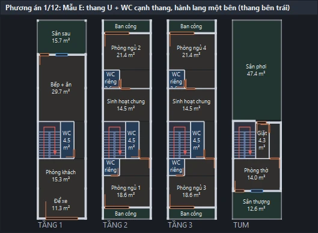
Máy đề xuất xếp nhà ra sao
- Nhà phố theo mẫu nhà thật: thang chữ U quay ngang sát một tường, lối đi 0,9–1,1 m dọc tường kia; WC sát tường biên cạnh thang; phòng ngủ khép kín là khối chữ L ôm WC riêng; nhà sâu có giếng trời sau thang và sinh hoạt chung giữa nhà; tầng trên cùng / tum: sân thượng → thờ → giặt → sân phơi.
- Tầng 1 có WC gầm thang để bếp + ăn rộng ra; luôn kèm một phương án WC sau thang để so sánh.
- Nhà có thang máy: hố 1,5 m, thang bộ cuốn quanh hố sát một tường, sảnh dọc tường kia, WC sau lõi; vế thang bộ 0,7–0,8 m. Thang máy vẽ bằng block "Thang máy gia đình", tường hố khoét sẵn ô cửa; mặt cắt qua hố có hố pit.
- Phòng ngủ ra ban công bằng cửa 1 cánh + cửa sổ. Cột BTCT cùng vị trí ở mọi tầng, có lưới cột + trục như bản vẽ thật.
- Lõi thang có 8 mẫu A–H (cuối nhà, U giữa nhà + giếng trời, U quay ngang, cạnh thang máy, 3 phòng ngủ hành lang một bên, thang thẳng + giếng trời, quanh thang máy, U cạnh phòng); kiểu thang chọn trên bảng được ưu tiên, các mẫu khác vẫn xem bằng ◀ / ▶.
- Lô nhỏ, nông (8–12 m): thang U bậc quạt, WC gầm thang, bếp + ăn cạnh thang. Lô quá nông cho chương trình: bảng báo cần sâu bao nhiêu và gợi ý bớt phòng.
- Nhà cấp 4 (mặt tiền ≥ 6,6 m, 1 tầng): hiên trước, dãy chung khách → bếp + ăn, dãy phòng một hoặc hai bên.
- Chấm điểm theo TCVN 4451 và nhà phố thực tế: phòng ngủ ≥ 9 m² rộng ≥ 2,4 m; WC ≥ 2,4 m² rộng ≥ 1,15 m; hành lang ≥ 0,9 m; khách ≥ 12 m²; WC không ra mặt tiền / không trên bếp, thang không đâm thẳng cửa chính.
Biệt thự
Chọn Loại nhà → Biệt thự: bảng tự đặt lùi hai bên, mái Thái, mặt đứng tân cổ điển và chương trình biệt thự mặc định (sửa lại được). Nhà đặt giữa lô, có khối nhô phía trước một bên (mỗi phương án có bản khối nhô trái / phải), sảnh cột tròn + tam cấp, ban công trên sảnh, thang chữ U giữa nhà, WC riêng góc phòng ngủ. Mái Thái có trán tam giác ở đầu khối nhô; mặt đứng có cột Corinthian suốt 2 tầng, cửa tân cổ điển (tầng 1 cửa vòm), con sơn dưới phào đỉnh, đèn trụ hai bên tam cấp, lan can con tiện. Tường rào ranh lô ở lớp KT-TUONGRAO, không vẽ trên mặt đứng / mặt cắt.
Khung kéo thả — tự bố trí
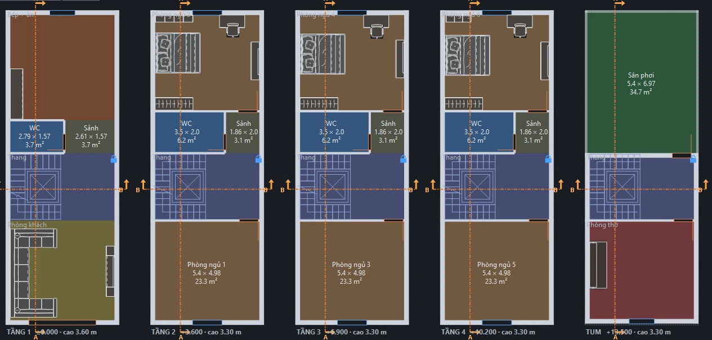
- Mở khungMục 3 chọn "Tự bố trí (kéo thả mô-đun)" hoặc Mở khung kéo thả; bấm Bắt đầu trống hoặc Từ phương án máy (sửa tiếp phương án đang xem).
- Thả mô-đunKéo ô (PHÒNG · NGOÀI NHÀ · THANG · LÕI · CỬA) thả vào tầng; khối bám mép lô / mép khối gần. Hàng THANG có 7 kiểu: 1 vế, 2 vế thẳng, chữ L, chữ U, 3 vế, quanh thang máy, tròn. Thang, thang máy, giếng trời có ở mọi tầng cùng chỗ.
- Dời, co giãn, nhập sốKéo thân khối để dời (sang tầng khác được), kéo cạnh / góc để co giãn. Bấm chọn khối → dải thông số: rộng, sâu, cách trái, cách mặt tiền (mm, hoặc m như 3.6), tường trái / phải / trước / sau (0 = theo bề dày chung), ô Cố định.
- CửaKéo ô cửa thả lên tường. Dải thông số: Loại, Mẫu (mọi block cửa của thư viện), Số cánh, Rộng, Cao, Bậu, Cách đầu trái / phải (hoặc dưới / trên) — gõ số để đặt chính xác. Máy không tự đặt cửa trong khung kéo thả ("Từ phương án máy" thì lấy luôn cửa của phương án đó).
- Đồ nội thấtBấm một phòng → hàng ô thành đồ của phòng đó; kéo thả vào phòng (tựa tường gần nhất). Thả bàn ăn / bàn học / bàn trang điểm thì ghế tự đặt theo bàn. ◀ Mô-đun để quay lại.
- VẽVẽ vào bản vẽ. Phòng chưa đặt đồ thì máy tự bố trí nội thất khi vẽ (theo ô Nội thất).
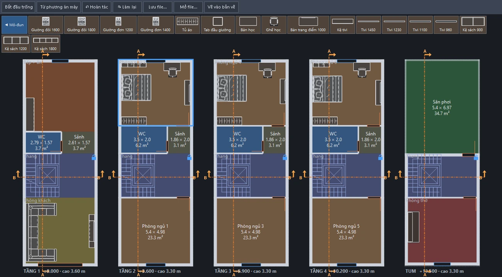
| Thao tác | Kết quả |
|---|---|
| Chuột phải khối | Đổi loại, chép sang tầng khác, chỉ giữ ở tầng này, Cố định, "Gộp với … bên cạnh", xóa |
| Chuột phải thang | Kiểu thang, chỗ quay (chiếu nghỉ / bậc quạt), xoay 90°, đảo chiều, bề rộng vế, mặt bậc, khung vừa thang, hướng LÊN / XUỐNG |
| Chọn thang | Rộng vế, Số bậc (0 = tự động), Rộng bậc, hố thang máy rộng × sâu (mặc định 1500 × 1500), hố pit sâu |
| Bấm / chuột phải chỗ trống | Cao tầng (0 = theo bảng), tường bao / ngăn, lưới cột, chép bố trí sang tầng khác (tích "cả nội thất"), xóa hết tầng |
| Chuột phải đồ | Xoay, tựa tường, đổi mẫu, dài – sâu, sao chép, xóa |
| R · Delete · Ctrl+Z · Ctrl+Y | Xoay khối / thang / đồ / chiều mở cửa dưới chuột · xóa · hoàn tác · làm lại |
| ✂ Mặt cắt ▾ | Chèn mặt cắt dọc / ngang, để máy đặt tự động, hoặc cắt thủ công trên bản vẽ |
- Thả mô-đun đè lên khối đã có: mô-đun mới tự áp sát, khối cũ giữ nguyên kích thước; tầng kín chỗ thì báo đỏ và giữ như cũ. Khối chồng nhau (file cũ) gạch đỏ — bấm phần đỏ để chọn rồi Delete.
- Không gian cùng loại kề nhau (sảnh, khách, bếp, ăn, sinh hoạt chung, sân, ban công) tự gộp một phòng; phòng kín muốn gộp (phòng ngủ chữ L): chuột phải → "Gộp với … bên cạnh". Cạnh lệch nhau ≤ 6 cm coi là một đường tường.
- Chỗ trống giữa các khối là khoảng không — muốn có lối đi thì đặt khối "Sảnh / hành lang".
- Đổi lô / số tầng / thang trên bảng thì bố trí đang sắp bị bỏ; đổi công năng, bề dày tường, cao tầng thì không.
File .mbtd và nạp lại (MBTDNAP)
- Lưu / mởTrong khung: Lưu file… → file
.mbtd(gửi người khác mở được), Mở file… hoặc "Bố trí tự lưu lần trước". Khung tự lưu sau mỗi lần sửa. - Liên kết với bản vẽVẽ từ khung thì Dtool nhớ file và lần sửa đã vẽ (chưa có file thì tạo "
- MBTD.mbtd" cạnh bản vẽ). - Sửa ở nơi khácSửa file ở app điện thoại hoặc khung kéo thả rồi lưu — AutoCAD nhắc trên dòng lệnh + bong bóng "Cập nhật bản vẽ".
- Vẽ lại theo fileMBTDNAP: nét Dtool đã sửa tay được liệt kê và hỏi một lần; bản vẽ sao lưu vào
Dtool_saoluucạnh bản vẽ; chỉ xóa phần Dtool vẽ lần trước — ghi chú, DIM, chi tiết anh vẽ thêm giữ nguyên.
Bấm Vẽ vào bản vẽ lần nữa cho nhà đã vẽ: chọn Capnhat (mặc định, vẽ lại tại chỗ) hoặc Vemoi (thêm một bản). Phương án máy đề xuất chưa có liên kết — muốn liên kết: mở khung → "Từ phương án máy" rồi vẽ.
| Lệnh | Việc làm |
|---|---|
| MBTD | Mở bảng Thiết kế |
| MBTDLO | Chọn khung lô đất + cạnh mặt tiền |
| MBTDVE | Vẽ phương án vào bản vẽ |
| MBTDNAP | Vẽ lại theo file .mbtd đã liên kết |
| MBTDMC | Mặt cắt thủ công trên bản vẽ MBTD |
06Trục, cột, tường, cửa
Mặt bằng vẽ tay bằng đối tượng Dtool: tường mang sẵn cao / tầng / vật liệu để tính khối lượng, cửa là block động của thư viện và tự cắt tường.
Trục và cột
- Lưới trụcLUOIKT → đầu trục DTRUC → DIM trục DIMT.
- CộtCOT bấm từng tâm, hoặc COTT (đặt tại giao trục): quét chọn trục, cột đặt ở mọi giao điểm, bỏ qua chỗ đã có cột.
Tường
- Chỉnh bảng TườngNút ↘ nhóm Tường: bề dày, vị trí (tim / mép), vật liệu, Chiều cao, Tầng / khu vực, Vật liệu khối xây. Ô "Gắn cao / tầng khi vẽ tường" (mặc định bật).
- VẽTUONG rồi bấm chuỗi điểm; TUONGT dựng tường theo trục. Tường vẽ xong có sẵn cao, tầng, vật liệu, bề dày cho khối lượng. Tường vẽ từ trước: nút "Gán tường đã vẽ" (GCAOT).
- Nối, hoàn thiệnNTUONG nối tường, TTCOT trừ cột khỏi tường, HTG hatch hàng loạt, CNHT cập nhật hatch.
- Co kéoKEOTUONG dùng như STRETCH: quét khung cắt → điểm gốc → điểm đến. Kéo dài, co ngắn, dời đoạn, đổi bề dày; hatch, vữa, ô cửa tự cập nhật; cửa, cột, DIM, biên phòng trong khung kéo theo.
- Xóa đoạn tườngXTUONG: bấm vào giữa bức tường (bấm liên tiếp, Enter để thôi) — cắt đoạn giữa hai chỗ giao, xóa cửa trong đoạn, dựng lại hatch / vữa.
- Tường cao khác nhau trong cùng tầng: đổi Chiều cao trên bảng trước khi vẽ, hoặc sửa sau bằng GCAOT / GCAO.
- KEOTUONG kéo quá đầu tường thì báo và không đổi gì; tường chồng lên tường khác sau khi kéo: NTUONG; U để hoàn tác.
- Mặt bằng chép (làm mặt bằng trát, lát…) tự tách khỏi bản gốc. Bản vẽ đã chép từ bản Dtool cũ: chạy SCHEP một lần.
Cửa
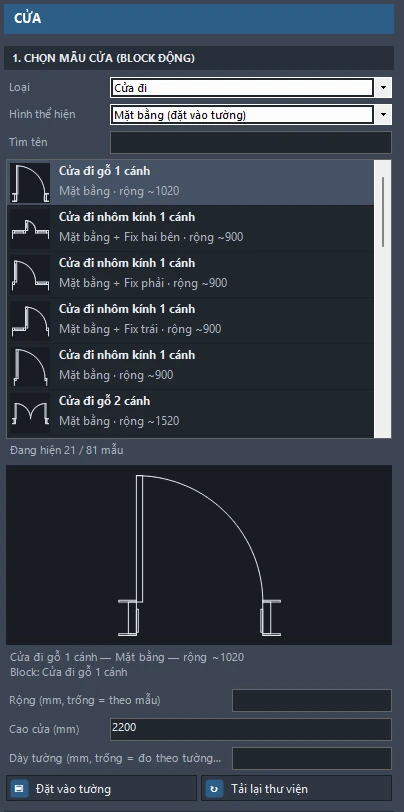
- Mở bảng CửaCDI (cửa đi) hoặc CSO (cửa sổ), hoặc nút ↘ nhóm Cửa.
- Chọn mẫuLọc theo hình thể hiện, tìm tên, danh sách có hình thu nhỏ, xem trước lớn.
- Thông sốRộng (trống = theo mẫu), cao, Dày tường (trống = lấy bề dày tường bấm vào), vị trí trên mép tường (tại điểm bấm / cách góc / giữa đoạn), mã (AUTO), cao bệ, tầng, vật liệu, hiện nhãn.
- ĐặtĐặt vào tường (DATCUA, hoặc nháy đúp mẫu) → bấm mép tường phía cánh mở. Chèn tiếp bản sao liên tục được.
| Lệnh | Việc làm |
|---|---|
| CDI · CSO · CUA | Mở bảng Cửa (cửa đi / cửa sổ) |
| DATCUA | Đặt mẫu đang chọn vào tường |
| DCUA | Dời / chép cửa |
| GCUA | Gắn cửa vào tường (cửa chưa cắt tường) |
| CNCUA · TDCUA | Cập nhật ô cửa bằng tay · tắt / bật tự cập nhật cửa |
| NCUA · MCUA | Ẩn / hiện nhãn cửa · mã cửa |
- Cửa đã gắn tường tự cắt lại tường sau MOVE, COPY, dán, ARRAY, STRETCH, ROTATE, MIRROR, kéo grip, ERASE, sửa Properties; chép / dời sang tường khác thì tự gắn vào tường mới.
- Rộng ngoài khoảng của mẫu: Dtool báo và dùng giới hạn của mẫu.
- DIMMB báo số cửa chưa gắn tường (tường chưa cắt → khối lượng tường sai) — gõ GCUA.
07Phòng, sàn, trần, nội thất
Nhãn phòng có diện tích, lát sàn, trần, đèn; bố trí nội thất tự động theo cỡ phòng và lối đi; thư viện block động tự dựng (cửa, nội thất, thiết bị, cây, xe, người…).
Phòng – sàn – trần
- Nhãn phòngPHONG: bấm trong phòng → nhãn mã, tên, diện tích, vật liệu sàn (ô "Hiện" chọn mục ghi lên nhãn). Bấm liên tiếp được, mã và tên tự tăng (P01 → P02). CNPH cập nhật diện tích sau khi sửa tường.
- Lát sànLSAN; khối lượng lát tính theo gạch đã vẽ.
- TrầnTRAN mặt bằng trần giật cấp: cao thành giật cấp (200), rộng khe hắt đèn (150), cao gờ hắt (100); nhãn trần có dòng "S khai triển".
- Đèn, ốpDEN rải đèn; OPLEN len / ốp tường.
Bố trí nội thất tự động
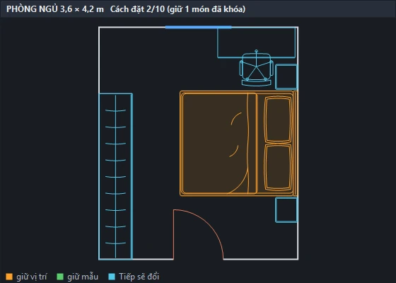
- Chọn lệnh theo phòngBTPN ngủ · BTWC vệ sinh · BTBEP bếp · BTKHACH khách · BTAN ăn.
- Bấm giữa phòngBấm liên tiếp nhiều phòng; Enter / ESC để thôi. Phòng hở (bếp + ăn chung): gõ
K(khung 2 điểm) rồi bấm hai góc;Gquay lại "Giữa phòng". - Xem phương ánDtool dựng nhiều phương án, xem trước trên bản vẽ; bảng Nội thất + khung xem trước tự mở.
Tiep/Truocđổi phương án. - Giữ món đã ưngTrên bảng, tích "Mẫu" / "Vị trí" của từng món —
Tiepchỉ đổi các món chưa tích. - ĐặtEnter (
Chon) → đồ lên lớpKT-NOITHAT;Huybỏ qua phòng.
- Tùy chọn: phòng ngủ
Giuong,Tuao,Banhoc; WCKhutam(tự chọn / sen tắm mở / vách kính hoặc cabin / bồn tắm); bếpKieu(chữ I / L),Tutren; kháchSofa,Bantra,Ghedon,Tv; ănGhe(số chỗ). Đã chọn mẫu bằng tùy chọn thìTiep/Truocchỉ đổi vị trí. - Cỡ đồ theo phòng: giường < 9 m² → 1400, 9–12 m² → 1600, ≥ 12 m² → 1800; bàn ăn < 8 m² → 4 chỗ, 8–14 m² → 6, > 14 m² → 8.
- Khoảng trống giữ: quanh giường 600, lối trước tủ bếp ≥ 900, lối trong WC ≥ 450; giường không chắn lối từ cửa, hai bên lên được.
Thư viện block động
- Mở thư việnCUATV mở thư viện mọi nhóm → chọn mẫu → bấm điểm chèn → chèn tiếp bản sao.
- Đổi hình chiếu, kiểuNút Hình chiếu (Visibility) cạnh điểm chèn: Mặt bằng / Mặt đứng / Mặt bên / Mặt cắt và các kiểu dáng. Thông số động (Chiều rộng, Dài…) sửa trong Properties hoặc kéo nút.
- Chép, cập nhậtDONG chép block động; CNTV cập nhật block thư viện trong bản vẽ cũ để có hình mới và màu vật liệu.
| Lệnh | Việc làm |
|---|---|
| PHONG · CNPH | Nhãn phòng · cập nhật phòng |
| LSAN · TRAN · DEN · OPLEN | Lát sàn · mặt bằng trần · rải đèn · len / ốp tường |
| BTPN BTWC BTBEP BTKHACH BTAN | Bố trí nội thất phòng ngủ / vệ sinh / bếp / khách / ăn |
| CUATV · DONG · CNTV | Thư viện block động · chép block động · cập nhật block thư viện |
| DMNT · TVNGUON | Danh mục nội thất của lệnh bố trí · xem dấu bản quyền block thư viện |
Block thư viện có màu vật liệu trên màn hình (lớp DTOOL-TOMAU, không in — in monochrome.ctb không ra mảng đen) và vệt kính (lớp DTOOL-KINH, có in, nét mảnh). Che nền bằng WIPEOUT nên đồ phía trước che đồ phía sau trên mặt đứng, mặt cắt.
08Mái, mặt cắt, mặt đứng, chi tiết
Mặt cắt, mặt đứng, chi tiết vẽ theo đúng mặt bằng và liên kết với nó: sửa mặt bằng thì hình tự vẽ lại tại chỗ. Mái dốc kèm mặt bằng mái và khối lượng mái.
Mái dốc — MAI
- Chọn đường baoMAI (nhóm Mái – Mặt đứng): chọn polyline kín theo mặt ngoài tường tầng trên cùng, hoặc chọn mái đã vẽ để sửa. Bấm điểm đặt MẶT BẰNG MÁI (Enter = tại chỗ).
- Tùy chọnKiểu Nhật (dốc 22°, đua 900, ngói phẳng xám) / Thái (35°, đua 600, ngói đỏ) / Mansard (dưới 70° cao 1,5 m, trên 25°); dạng 4 mái hông / 2 mái đầu hồi; dốc, đua, cao độ chân mái (mặc định đỉnh tầng trên cùng theo TANG); kết cấu BTCT dán ngói / kèo thép lợp ngói.
- Kết quảNhà chữ nhật / L / T / U / chữ thập tự chia khối, khe, nóc, sống mái. Mặt bằng mái có diềm, tường dưới mái (nét khuất), ngói theo hướng dốc, mũi tên dốc i %, cốt nóc, ghi chú. Mặt cắt / mặt đứng tự vẽ mái; KLKT tính ngói, BTCT / kèo, úp nóc, máng khe, diềm, tường thu hồi cho bản vẽ tên "MẶT BẰNG MÁI".
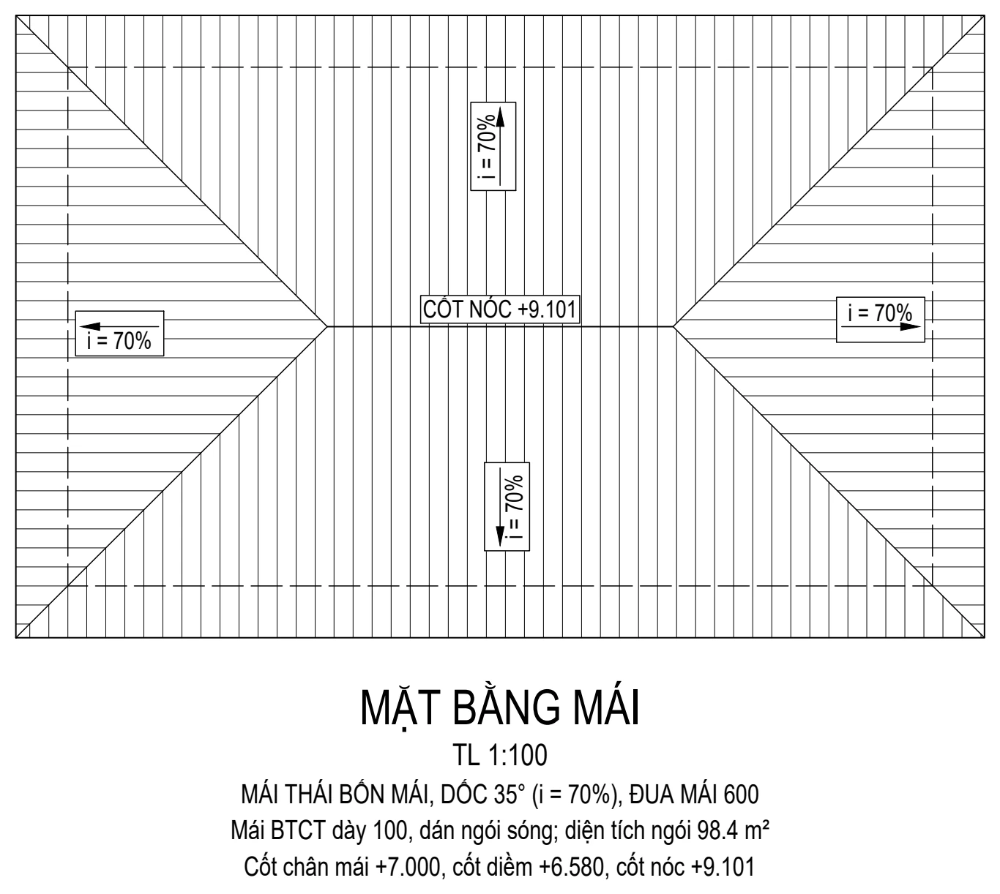
MAI vẽ.Nhà MBTD chọn mái ngay ở bảng Thiết kế mục 2; Dtool tự lấp khe hẹp < 1,2 m và bỏ sân thượng / ban công khỏi đường bao mái.
Mặt cắt
- Nhà MBTD: bảng Thiết kế mục 4, ô "Mặt cắt": Không vẽ / Tự đặt 1–4 mặt cắt (A-A dọc + B-B ngang qua thang, C-C ngang qua khối phòng lớn, D-D dọc phía còn lại) / Tự chọn vị trí (mỗi mặt cắt dọc / ngang, vị trí mm, hướng nhìn; tối đa 4; nút "Lấy vị trí tự đặt"). Cắt tay: MBTDMC.
- Bản vẽ khác: MCAT cắt theo mặt bằng (cần khai báo tầng TANG hoặc nhập cao các tầng trong hộp).
- Đường cắt rơi vào lòng tường song song thì tự dời ra chỗ thoáng.
- Mặt cắt có: tiết diện cửa bị cắt (block cửa "Mặt cắt"), lớp hoàn thiện sàn (vữa + gạch, phòng ngủ sàn gỗ; ghi chú "CẤU TẠO SÀN"), trần, dầm, hố pit thang máy, tam cấp theo cốt sân, mái, lan can ban công / sân thượng, đồ nội thất (đồ trước che đồ sau). Bê tông bị cắt tô đặc.
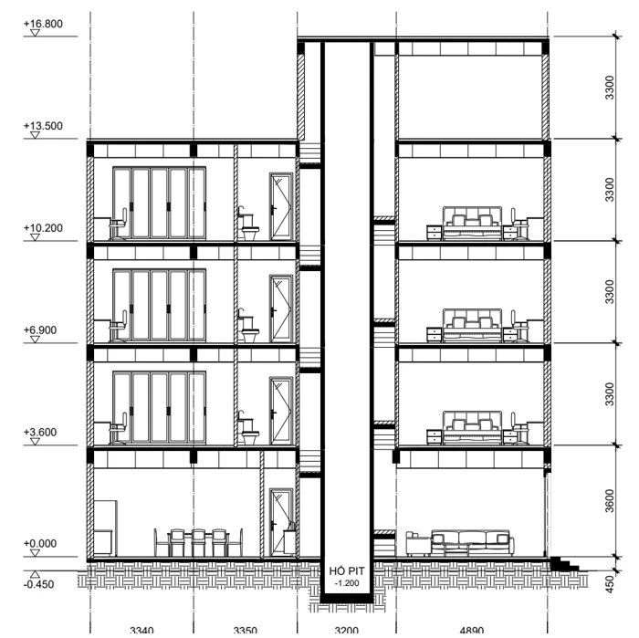
Mặt đứng — MDMB
- Đường nhìnMDMB: bấm 2 điểm của đường nhìn ở ngoài nhà (tự nắn ngang / dọc), rồi một điểm về phía nhà.
- Tên, phong cáchTên (mặc định "MẶT ĐỨNG CHÍNH"),
Hiendai/Tancodien, điểm đặt (gốc trái tại cốt ±0.000). - Kết quảMỗi tầng lấy mặt tường thấy đầu tiên: cửa theo hình mặt đứng của block, lan can, mái, tam cấp, cao độ, DIM cao tầng, trục. Tân cổ điển: phào tầng, phào đỉnh, mũ cửa, cột ốp, lan can con tiện bằng block thư viện. Chưa khai báo TANG: Dtool hỏi thêm độ sâu nhìn.
Nhà MBTD: bảng Thiết kế mục 4, ô "Mặt đứng": Không vẽ / Mặt tiền / Mặt tiền + mặt sau / Cả 4 mặt.
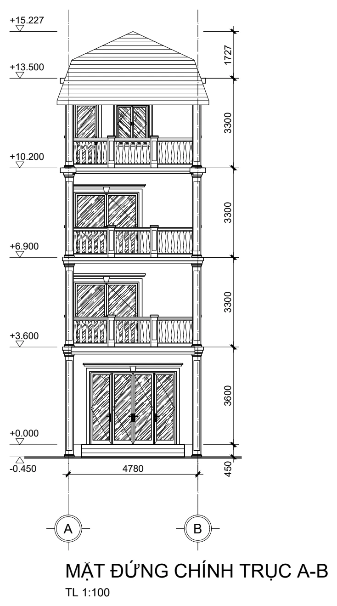
Chi tiết
- TCT trích chi tiết; DIMCT chọn hình chi tiết → tự DIM tường / cột / ô cửa; CNCT cập nhật.
- CTWC chi tiết WC: mặt bằng + mặt cắt 1-1 / 2-2 theo đúng thiết bị trong phòng.
- CTBP bể phốt, CTBN bể nước: bấm góc trái dưới là vẽ cả bộ (mặt bằng, mặt cắt A-A / B-B, ghi chú), dung tích theo số người; tích "Vẽ kèm chi tiết thép bể" để có luôn kết cấu thép bể.
- THANG cầu thang: thông số trên bảng Tiện ích (7 kiểu như khung kéo thả), chỉ chọn điểm gốc + hướng.
| Lệnh | Việc làm |
|---|---|
| MAI | Mái dốc + mặt bằng mái (chọn mái đã vẽ để sửa) |
| MCAT · MBTDMC | Mặt cắt · mặt cắt thủ công cho nhà MBTD |
| MDMB · MDUNG | Mặt đứng theo mặt bằng · mặt đứng sơ đồ theo hộp thông số |
| SCT | Sửa hình đã vẽ: mở lại hộp với thông số cũ, vẽ lại tại chỗ |
| CNMC · TDMC | Cập nhật mặt cắt / mặt đứng / chi tiết (Chon / Tatca) · bật / tắt tự cập nhật |
| THANG | Cầu thang |
| TCT · DIMCT · CNCT | Trích · DIM · cập nhật chi tiết |
| CTWC · CTBP · CTBN · CTBE | Chi tiết WC · bể phốt · bể nước · thép bể |
- Chữ, DIM, ghi chú anh vẽ thêm cạnh hình được giữ khi hình tự vẽ lại. U lần đầu chỉ bỏ phần tự vẽ lại.
- Sửa mặt bằng nhiều lần liên tiếp: tắt TDMC cho nhanh, sửa xong gõ CNMC →
Tatca.
09Kích thước và khối lượng kiến trúc
DIM theo chuẩn TCVN 5705 (mỗi tỉ lệ một kiểu DTOOL_1-N), ghi chú, và khối lượng xây – trát – sơn – lát – ốp – trần – cửa – mái ra Excel theo từng bản vẽ và toàn nhà.
Kích thước, ghi chú
- Đặt chuẩnCHUAN: cao chữ, gạch chéo / mũi tên, độ dày gạch, gióng, khung bản vẽ… Tích "Áp dụng cho các DIM đã có trong Model" để đưa DIM cũ về chuẩn.
- DIM mặt bằngDIMMB: chọn vùng bằng hai góc → mỗi phía 3 hàng: chi tiết (mép tường, ô cửa), trục, tổng. Bấm chỗ đặt hàng ngang rồi hàng đứng.
- Ghi chúKH ký hiệu, GCH ghi chú (đặt liên tục), STXT sửa chữ, SDIM sửa DIM.
Khối lượng ra Excel — KLKT
- Đặt tên bản vẽ theo công việcMỗi mặt bằng một tên "MẶT BẰNG …" có chữ khóa: XÂY, TRÁT / SƠN (thêm NGOÀI cho mặt ngoài), LÁT, ỐP, TRẦN, CỬA, MÁI — trong khung bản vẽ hoặc ngay dưới mặt bằng. Ví dụ: "MẶT BẰNG XÂY TƯỜNG TẦNG 1", "MẶT BẰNG TRÁT NGOÀI TẦNG 2".
- Tường có cao / tầngTường vẽ bằng bảng Tường đã có; tường cũ dùng GCAO.
- Trát – sơnTrong phòng: TSON. Mặt ngoài: TNGOAI → Tạo → bấm hai góc quanh mặt bằng tầng.
- SoátSKL báo dữ liệu thiếu (tường thiếu cao, cửa chưa gắn tường, phòng mất biên…).
- XuấtKLKT → Excel chia mục "BẢN VẼ: …" + TOÀN NHÀ; lệnh tự liên kết tên bản vẽ, gắn ID cấu kiện. Sửa bản vẽ xong: KLKTCN ghi đè file Excel đã xuất.
| Lệnh | Việc làm |
|---|---|
| CHUAN | Chuẩn DIM, chữ, layer, khung bản vẽ |
| DIMMB · SDIM | DIM mặt bằng · sửa DIM |
| KH · GCH · STXT | Ký hiệu · ghi chú · sửa chữ |
| KLKT · KLKTCN | Khối lượng ra Excel · cập nhật Excel đã có |
| TSON · TNGOAI | Trát – sơn phòng · trát – sơn mặt ngoài |
| GCAO · SKL | Gán cao / dày tường · soát dữ liệu |
| LKBV · TIMID · THKL | Liên kết bản vẽ (Tudong / Xem / Xoa) · tìm cấu kiện theo ID · bảng tổng hợp trong bản vẽ |
- Tên chung chung như "MẶT BẰNG TẦNG 1" bị bỏ qua để tránh tính trùng — bản chép để trát, lát nên đặt tên theo công việc.
- Mỗi cấu kiện có một ID cố định; cùng cấu kiện ở các bản vẽ của cùng tầng mang cùng ID.
- Giếng trời / sân trong: nhãn phòng có chữ "GIẾNG TRỜI", "SÂN TRONG" hoặc "LỖ THOÁNG" để tính trát / sơn ngoài quanh lòng.
- Tường xiên được tách mảng riêng (tường xiên <góc>°), tổng vẫn khớp.
- Khối xây tính chậm hơn (~20 s / mặt bằng); chỉ tính cho bản vẽ có chữ XÂY.
10Bảng thống kê, dàn trang, in bộ
Bảng diện tích, hoàn thiện, cửa; dàn trang hồ sơ kiến trúc tự động có khung tên, danh mục; in cả bộ ra một file PDF.
Bảng thống kê
BDT bảng diện tích · BHT bảng hoàn thiện · BSAN bảng lát sàn · BCUA bảng cửa · DEMTB đếm thiết bị.
Dàn trang — DTRKT
- Chọn khổ, thông tinDTRKT: khổ A4 đứng / A4 ngang / A3 / A2 / A1, tiền tố số hiệu (mặc định
KT-), người vẽ, kiểm tra; dàn trên Layout hoặc Model; "Xếp kín tối đa" nếu muốn ít tờ nhất. - Dtool tìm hìnhMặt bằng các tầng (vùng tầng MBTD / TANG, hoặc cụm có tên "MẶT BẰNG …"), mặt cắt, mặt đứng, chi tiết (hình Dtool vẽ, hoặc cụm có tên "MẶT CẮT / MẶT ĐỨNG / CHI TIẾT / SƠ ĐỒ …"), các bảng thống kê.
- Kết quảMỗi hình giữ tỉ lệ của nó; khung tên 180 × 50 ghi "TL 1:n" (nhiều tỉ lệ: "Như hình"); trang danh mục KT-00. Chạy lại DTRKT thì thay bộ trang lần trước của chính nó.
- InINBO: Toàn bộ Layout hoặc Model, chọn trang; máy in (mặc định DWG To PDF), khổ theo từng tờ,
monochrome.ctb, Đúng tỉ lệ / Vừa khổ → một file PDF nhiều trang.
| Lệnh | Việc làm |
|---|---|
| BDT · BHT · BSAN | Bảng diện tích · hoàn thiện · lát sàn |
| BCUA · DEMTB | Bảng cửa · đếm thiết bị |
| DTRKT | Dàn trang hồ sơ kiến trúc |
| INBO | In bộ (Layout / Model) ra một PDF |
| KTEN · KTRA · XPDF | Khung tên · kiểm tra · xuất PDF |
- DTRKT không lấy: lớp tắt / không in, khung tên vẽ sẵn trong Model, chi tiết thép kết cấu (phần đó do DTR lo).
- Cụm hình không có tên được báo ở dòng lệnh — thêm tên "MẶT BẰNG …" / "CHI TIẾT …" để được dàn.
- Nhà phố hẹp: khổ A4 đứng đặt được mặt bằng 1:100.
11Kết cấu móng
Móng đơn (M1…), móng băng (MB1…), đài cọc (MC1…), giằng móng (GM…) và cọc BTCT đúc sẵn: mặt bằng móng, mặt cắt, chi tiết thép, bảng thống kê, khối lượng ra Excel. Nhóm MÓNG trên tab Kết Cấu.
- Khai báo móngQLM: chọn loại móng, + Thêm / nhân bản, nhập kích thước, cao độ, thép; xem trước mặt bằng, mặt cắt, bảng thép. Thông số chung: mác bê tông, loại thép, lớp bảo vệ, tỉ lệ, tiền tố layer. Lệch tâm: móng đơn / đài cọc nhập
ex,ey; móng băng nhập độ lệch tim sườn so với tim bản. - Lưới trụcLUOI (khoảng trục dạng
3600 4200hoặc3x3600, tên trục bắt đầu, bóng trục, kích thước), hoặc dùng lưới trục có sẵn của bản vẽ kiến trúc. - Mặt bằng móngNhanh: MBM — chọn móng băng theo trục (liên tục / từng nhịp, lọc trục kiểu
1,3,A-C), móng đơn / đài cọc tại giao trục, giằng nối các móng, bấm giao trục 1-A là xong. Từng cấu kiện: DM đặt móng đơn / đài (gõXxoay 90°), MBA móng băng qua 2 giao trục, GM giằng giữa tâm 2 cột. - Giao móng băngGMB cắt nét chỗ móng băng giao nhau — tự chạy sau MBA / MBM / QLM; chạy lại sau khi MOVE / COPY / xóa móng bằng lệnh AutoCAD.
- Chi tiếtCTM một móng, CTMN nhiều móng: mặt bằng, mặt cắt 1-1 / 2-2, bảng thép, ghi chú.
- Thống kê, khối lượngTKM bảng thép vào bản vẽ; KLM đếm móng đã đặt, tính khối lượng, xuất Excel.
| Lệnh | Việc làm |
|---|---|
| QLM · -QLM | Quản lý móng (hộp thoại · dòng lệnh) |
| LUOI · MBM | Lưới trục · vẽ nhanh cả mặt bằng móng |
| DM · MBA · GM | Đặt móng đơn / đài cọc · móng băng · giằng móng |
| GMB | Cắt nét chỗ móng băng giao nhau |
| CTM · CTMN | Chi tiết một / nhiều móng |
| TKM · KLM | Bảng thép vào CAD · khối lượng ra Excel |
| CN · TEN · MAU | Cập nhật ký hiệu và chi tiết · đổi tên đối tượng chọn · tạo bản vẽ mẫu để xem cách dùng |
Giằng móng và cọc
- Giằng: b × h, cốt đỉnh, lót, thép trên / dưới / giá, neo vào cổ móng; đai dày vùng gối (mặc định L/4 mỗi đầu). Khối lượng theo tổng chiều dài các đoạn đã vẽ; các đoạn thẳng hàng qua tâm cột gom thành một tuyến thép liên tục, dài hơn cây thép thì cộng mối nối chồng theo TCVN 5574:2018. Ô
Neo= 0 thì lấy neo theo TCVN. - Cọc BTCT: cạnh, chiều dài, số đoạn, thép dọc 4 / 8 thanh, đai đầu đoạn, lưới đầu cọc, thép mũi, bản mã nối. Số cọc tự lấy theo tổng cọc trong các đài cùng cạnh cọc; Excel tách bê tông, ván khuôn, thép cọc, thép bản mã.
- Sửa thông số trong QLM thì mọi ký hiệu đã đặt tự cập nhật; cần thì chạy CN.
- Số lượng: tích "Đếm số lượng theo móng đã đặt trên bản vẽ", hoặc bỏ tích và nhập số móng giống nhau.
- Điểm chèn móng là tâm cột / tim tường. Cột biên, cột góc: xoay bằng
X(đủ 4 hướng). Móng băng lệch tâm: sườn lệch về bên trái theo chiều vẽ — muốn lệch bên kia thì vẽ ngược chiều. - Chi tiết vẽ 1:1, chữ và kích thước theo tỉ lệ (mặc định 1:25, kiểu DIM
DTOOL_1-25).
12Kết cấu dầm
Khai báo dầm theo nhịp, đặt lên mặt bằng; Dtool vẽ khai triển, mặt cắt, bảng thép và xuất khối lượng. Nhóm DẦM trên tab Kết Cấu.
- Dựng lưới trục
LUOI(xem Tầng, lưới trục). - Khai báo dầmQLD → tạo D1, D2…: b × h, dày sàn, các nhịp trục–trục (vd.
4200 3600 4200), bề rộng cột, công xôn trái / phải, cốt đỉnh; thép chủ trên / dưới, mũ gối, gia cường nhịp, thép giá, đai. Ô xem trước vẽ ngay khai triển, mặt cắt, bảng thép. - Thông số chungNút Thông số chung… trong QLD: bê tông, mác thép, lớp bảo vệ, nối chồng, chiều dài cây thép, tỉ lệ chi tiết / mặt bằng, trừ giao nhau dầm.
- Đặt lên mặt bằngMBD vẽ theo lưới trục (dầm theo trục chữ / trục số, lọc trục, cột tại giao trục) hoặc DD bấm lần lượt tâm các cột gối, Enter kết thúc.
- Vẽ chi tiếtCTD một dầm, CTDN (nút Vẽ nhiều dầm…) nhiều dầm — gõ
*là tất cả. - Thống kêKLD ra Excel, TKD bảng thống kê thép trong bản vẽ.
| Lệnh | Việc làm |
|---|---|
| QLD · -QLD | Quản lý dầm (hộp thoại · dòng lệnh / script) |
| MBD · -MBD | Vẽ nhanh mặt bằng dầm theo lưới trục |
| DD | Đặt dầm qua tâm các cột gối |
| GDA | Vẽ lại đường bao dầm, tự cắt chỗ giao dầm, chỗ cột |
| CTD · CTDN | Chi tiết một dầm · nhiều dầm |
| KLD · TKD | Khối lượng ra Excel · bảng thép ra CAD |
| CN · TEN | Vẽ lại mọi chi tiết theo thông số mới · đổi tên đối tượng đang chọn |
Thông số hay dùng
- Chiều cao theo nhịp: cột "Chiều cao h" trong bảng nhịp (nhấp đúp ô để nhập). Mỗi chiều cao có cặp mặt cắt riêng.
- Vị trí dầm: tự nhận dầm biên / dầm giữa theo mặt bằng, hoặc chọn cố định. Dầm biên: ván khuôn thành ngoài tính đủ h, thành trong tính h − dày sàn.
- Khai báo theo bản vẽ thiết kế (để trống thì Dtool tự tính):
tructên trục các gối,cotgoicột trái / phải trục từng gối,themthép bổ sung (T/B+số×Ø+:x1:x2,:2= hàng 2 — cóthemthì bỏ mũ gối / gia cường tự tính),daigoivùng đai dày từng nhịp,hspchiều cao từng nhịp,goidamgối là dầm đỡ,daigcđai gia cường (Ø6 a50, Ø8 a60, Ø10 a80, Ø12 a90),keoL/keoRthép trên kéo qua gối vào sàn,nh=1đai một nhánh. - Dòng lệnh -QLD: dùng dấu phẩy thay khoảng trắng;
sl=n= số lượng nhập tay.
Chi tiết thép, nối, neo (TCVN 5574:2018)
- Chia đoạn theo cây thép: thanh dài hơn cây (mặc định 11 700) tự chia đoạn, vẽ hình chi tiết thép với vùng nối gạch chéo và elip mối nối. Chọn "Mọi dầm" / "Không" trong Thông số chung.
- Nối chồng so le hai mẫu A / B, tâm hai mối nối cạnh nhau cách ≥ 1,3 Lnối (≤ 50 % số thanh nối tại một tiết diện). Vùng được nối: thép trên giữa nhịp (cách mép gối ≥ Ln/4), thép dưới trong Ln/4 từ mép gối; không nối trong công xôn.
- Mối nối buộc phải nằm ngoài vùng được nối đánh dấu (*) kèm ghi chú đề nghị thiết kế xác nhận — thường gặp ở nhịp dài hơn ~2 lần cây thép (cần nối cơ khí hoặc thanh đặt dài).
- Đầu thanh trong gối: gối cột lùi 60 mm từ mặt ngoài cột; gối dầm lùi c + Ø đai + 10.
- Thép sàn lớp trên đặt trên thép dầm: lớp bảo vệ mặt trên dầm tự tính theo chồng thép của sàn cùng bề dày.
- Đóng QLD là chi tiết của dầm đã đổi được vẽ lại đúng chỗ — chỉnh tay trên chi tiết sẽ mất.
- Lưu mẫu / Lấy mẫu dùng chung trên máy; Xuất / Nhập dự án chép cấu kiện sang bản vẽ khác.
- Khối lượng dầm: bê tông từ đáy sàn, giữa mép cột; tự trừ phần giao nhau dầm (tắt được trong Thông số chung).
- Ký hiệu thép là block động
DTOOL_KYHIEU_THEP, sửa được (giữ các thuộc tính).
13Kết cấu phần thân: cột, vách, thang, bể
Cột, vách, lanh tô, ô văng, thang bộ, bể ngầm — khai báo trong QLTH (nhóm THÂN), đặt lên mặt bằng, vẽ chi tiết thép, thống kê. Thông số chung (bê tông, thép, nối chồng, tỉ lệ) dùng chung với dầm.
- Khai báoQLTH (cả phần thân) hoặc theo loại: QLC cột · QLV vách · QLLT lanh tô · QLOV ô văng · QLTB thang bộ · QLBE bể ngầm. Mỗi cấu kiện có ô Lớp BT bảo vệ riêng; xem trước ngay khi gõ số.
- Đặt lên mặt bằngDCOT cột (bấm tâm,
Xoay,Giaotruc= mọi giao trục) · DVACH vách (hai đầu) · DLT lanh tô (hai mép ô cửa) · DOVA ô văng (hai đầu dọc tường, vươn bên phải hướng bấm) · DTB thang · DBE bể. Nút Đặt lên bản vẽ trong QLTH gọi đúng lệnh theo loại. - Chi tiếtCTC · CTV · CTLT · CTOV · CTTB · CTBE; nhiều cấu kiện: CTNT.
- Thống kêTKTH bảng thép vào bản vẽ; KLTH khối lượng ra Excel.
Cột
- Cột nhiều tầng: số tầng cột đi qua, cao tầng 1 / tầng điển hình, cốt chân. Tầng liên tiếp giống nhau chỉ vẽ một tầng, ghi "TẦNG 2 ÷ 5 (4 tầng giống nhau)"; khối lượng vẫn đủ.
- Mặt đứng: thép chờ + nối chồng TCVN 5574:2018 (so le hai đợt, nhóm sau nối cao hơn 1,3 Lnối), đai răng lược theo vùng (dày hai đầu = max(cạnh lớn, H/6, 500)), đai dày trong nút; mặt cắt có thép dọc, đai, đai móc.
- Khai báo từng tầng theo bản vẽ thiết kế (shop drawing): thông số
tang=mã:H:Ø:vùng đai dàymỗi tầng từ dưới lên (vdH:3500:22:2000,1:4500:22:2000);nhomnhóm nối từng hàng thanh;gianghàng có đai móc;top=1tầng trên cùng bẻ neo vào dầm;chothép chờ cột phía trên;hsTrenbê tông tới đáy sàn trên. - Số cột tự đếm theo số block đã đặt bằng DCOT.
Thang bộ từ thang kiến trúc — KCTB
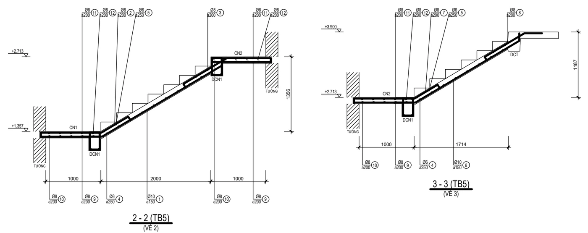
KCTB dựng từ thang kiến trúc.- Chọn thang kiến trúcKCTB: chọn một nét của cầu thang vẽ bằng THANG (hoặc thang của nhà MBTD).
- TênEnter = TB tiếp theo; gõ tên đã có = cập nhật hình học thang đó (giữ bản dày, dầm, thép; chi tiết đã vẽ tự vẽ lại).
- Điểm đặt chi tiếtEnter = không vẽ. Kiểu thang, cao tầng, số bậc, mặt bậc, vế, chiếu nghỉ / bậc quạt, giếng thang, lõi thang máy, thang tròn lấy đúng như hình kiến trúc.
- Đủ 7 kiểu thang kiến trúc: 1 vế, 2 vế thẳng, chữ L, chữ U, 3 vế, quanh thang máy, thang tròn (trụ giữa + bậc công xôn).
- Sơ đồ: bản thang kê lên dầm chiếu tới (ở sàn) và dầm chiếu nghỉ DCN (chữ U một dầm suốt; góc 90° dầm gãy góc chữ L); chiếu nghỉ = ô bản lưới 2 phương; bậc quạt = bản xoắn liền vế.
- Chi tiết: mặt bằng kết cấu thang, mặt cắt dọc từng dãy vế, mặt cắt ngang vế, chi tiết dầm chiếu nghỉ, bảng thép. Dầm chiếu nghỉ thấp hơn đáy bản thang thì tự nâng (có báo).
Vách, lanh tô, ô văng, bể
- Vách: mặt cắt ngang (thép đứng 2 lớp, thép ngang bao U, cấu kiện biên có đai, móc C), mặt đứng. Vách tầng hầm theo mặt bằng (vách chắn đất chạy vòng): thông số
nguon= tệp dữ liệu đa giác mặt ngoài + các loại vách → mặt bằng vách, mặt cắt từng loại, khai triển, chi tiết góc, băng cản nước. - Lanh tô: mặt cắt dọc (gối kê tường), mặt cắt ngang. Ô văng: phẳng, dốc liền sàn, treo dưới dầm, tai sàn; dải mái dốc quanh vòm mái (
vom=1). - Bể ngầm (QLBE / CTBE): thành BTCT hoặc thành xây gạch; lòng L × B × H, 0–2 vách ngăn, lỗ thăm; thép đáy 2 lớp, thành 2 lớp, thép ngang vòng kín, nắp + gia cường lỗ thăm; mặt cắt 1-1 / 2-2 / 3-3, mặt bằng thép đáy, nắp.
| Lệnh | Việc làm |
|---|---|
| QLTH · -QLTH · -SUACK | Quản lý phần thân · thêm bằng dòng lệnh · sửa cấu kiện bằng dòng lệnh |
| QLC QLV QLLT QLOV QLTB QLBE | Quản lý cột / vách / lanh tô / ô văng / thang / bể |
| DCOT DVACH DLT DOVA DTB DBE | Đặt lên mặt bằng |
| KCTB | Thang bộ kết cấu từ thang kiến trúc |
| CTC CTV CTLT CTOV CTTB CTBE · CTNT | Chi tiết từng loại · nhiều cấu kiện |
| TKTH · KLTH | Bảng thép vào CAD · khối lượng ra Excel |
Tích "Đếm số lượng theo bản vẽ": cột, thang theo số block; vách, lanh tô, ô văng theo từng đoạn và nhóm theo chiều dài; chi tiết vẽ theo kích thước gặp nhiều nhất, Excel tách dòng theo từng kích thước. Sửa cấu kiện trong QLTH thì chi tiết và bảng thép đã vẽ tự vẽ lại.
14Kết cấu sàn
Ô sàn bản kê 4 cạnh, bản dầm, công xôn; vẽ sàn tự động theo dầm; thép sàn chạy liền mạch theo cả mặt bằng như thi công thật. Nhóm SÀN trên tab Kết Cấu.
- Khai báo loại sànQLS: kiểu sàn (0 bản kê 4 cạnh · 1 bản dầm một phương · 2 công xôn), Lx × Ly, chiều dày, thép dưới hai phương, thép lớp trên: thép mũ tại gối (vươn kM × Ln từ mép dầm, có móc) hoặc lưới 2 lớp chạy suốt (không thép mũ).
- Đặt ô sànSANTD tự động: quét vùng mặt bằng kết cấu (Enter = cả bản vẽ), nhập chiều dày → mỗi vùng chữ nhật có dầm bao kín thành một ô; ô cùng kích thước dùng chung một loại (có sẵn thì dùng lại, chưa có thì tạo S1, S2…). Chưa có dầm thì chia theo ô lưới trục. Đặt tay: DSAN (hai góc ô, hoặc
Giaotruc= mọi ô lưới). - Chi tiết từng loạiCTS: mặt bằng thép, mặt cắt 1-1 / 2-2, bảng thép.
- Thép theo mặt bằngMBTS (mục dưới) khi muốn thép chạy suốt nhiều ô.
Thép sàn liền mạch — MBTS
- Chọn vùngQuét các ô sàn đã đặt (Enter = cả bản vẽ). Ô ở nhiều tầng TANG → mỗi tầng một mặt bằng.
- TênMặc định tên tầng; ô đã thuộc mặt bằng cũ → tên đó = cập nhật.
- Thép lớp trên
Theosan(theo từng loại sàn) /Mu(thép mũ tại gối) /Hailop(lưới 2 lớp chạy suốt) → điểm đặt.
- Lớp dưới chạy suốt các ô liền nhau cùng Ø / bước / chiều dày, qua dầm giữa, neo vào dầm biên; dài hơn cây thép thì chia đoạn nối chồng hai mẫu A / B, mối nối gần gối.
- Thép mũ vắt qua dầm giữa, vươn vào mỗi ô kM × nhịp thông thủy của ô đó, móc hai đầu; phân bố dưới mũ chạy suốt dọc tuyến dầm.
- Dải ô kề nhau cùng cấu tạo gộp thành một nhóm rải liền (một nhãn cho cả mảng sàn); tách khi Ø / bước / dày khác hoặc gặp lỗ (ô không có sàn, lỗ thang).
- Bản vẽ: mặt bằng thép lớp dưới, lớp trên (mép sàn, dầm nét khuất, trục), bảng thống kê. Thống kê TKTH / KLTH: ô sàn đã gộp chỉ còn bê tông, ván khuôn (thép tính theo mặt bằng).
- Sửa ô sàn hoặc thép loại sàn → chạy lại MBTS (chi tiết đã vẽ tự vẽ lại). Sàn công xôn chưa gộp.
| Lệnh | Việc làm |
|---|---|
| QLS | Quản lý sàn |
| SANTD · DSAN | Đặt ô sàn tự động theo dầm · đặt tay |
| MBTS | Thép sàn liền mạch theo mặt bằng |
| CTS | Chi tiết sàn |
Sàn có thông số nguon = tệp dữ liệu (đường bao BAO, lỗ LO, vùng dày VUNG, mái dốc DOC, hạ cốt HA, nhóm thép NHOM…) vẽ được lưới thép chạy suốt theo đúng bản vẽ thiết kế, kể cả sàn hầm chịu đẩy ngược (NGUOC 1) và mép xiên (CAT). Chi tiết định dạng tệp: tài liệu HUONG_DAN.md trong bộ cài, mục 1g.
15Tầng và lưới trục
Khai báo tầng để mỗi mặt bằng biết cao độ của nó: mặt cắt, mặt đứng, khối lượng theo tầng, điện nước và xuất IFC đều dựa vào đây.
Lưới trục
- Kết cấu: LUOI — khoảng trục dạng
3600 4200hoặc3x3600, tên trục bắt đầu, bóng trục trên / dưới / trái / phải, chuỗi kích thước + kích thước tổng; xem trước rồi bấm giao trục đầu. -LUOI cho script. - Kiến trúc: LUOIKT, DTRUC, DIMT (xem Trục, cột, tường). Dùng chung được lưới trục có sẵn của bản vẽ.
Khai báo tầng — TANG
- Bảng tầngTANG: tên, cao độ sàn (cao tầng tự tính). Nút Tạo mẫu (Móng, Tầng 1…3, Mái).
- Vùng mặt bằngChọn vùng mặt bằng…: khung chữ nhật bao trọn mặt bằng của tầng (khung không in) + điểm gốc (giao trục 1-A) để đối chiếu giữa các tầng.
- Kiến trúc hay kết cấuCột Kiến trúc: tầng là mặt bằng kiến trúc / điện nước — không ghi tên "MẶT BẰNG KẾT CẤU", DTR không lấy, DTRKT nhận. DNTANG (tab Điện Nước) mở cùng bảng, tầng mới mặc định Kiến trúc.
- Chép tầngChép sang tầng đang chọn: chép cả cấu kiện (dầm, sàn, cột…) hoặc chỉ lưới trục, kích thước; tầng đích chưa có vùng thì tự đặt vùng mới bên phải.
- Cột nhiều tầng đặt ở tầng k tự hiện ở các tầng mà cột đi qua (chỉ thể hiện, không đếm trùng khối lượng).
- KLM, KLD, KLTH có thêm phạm vi
TheoTang: mỗi tầng một phần trong Excel, cuối file phần TOÀN CÔNG TRÌNH. - Nhà vẽ bằng MBTD tự khai báo tầng. CNTANG vẽ lại khung, tên mặt bằng, cột đi qua.
16Hồ sơ kết cấu: dàn trang, rà lỗi
Dàn trang tự động mặt bằng + chi tiết + bảng thép lên khổ giấy có khung tên, rà lỗi cả hồ sơ, in bộ một file PDF. Nhóm HỒ SƠ trên tab Kết Cấu.
Dàn trang — DTR
- Thông tinDTR: khổ A4 đứng / A4 ngang / A3 / A2 / A1, tiền tố số hiệu (
KC-), số bắt đầu, người vẽ, kiểm tra; nội dung: mặt bằng các tầng, chi tiết cấu kiện, bảng thống kê thép. - Layout hay ModelLayout: mỗi trang một Layout, mỗi hình một khung nhìn giữ tỉ lệ. Model: các tờ ghép ngay trong Model (khung giấy + khung tên chèn theo tỉ lệ tờ, hình là bản sao — bản gốc giữ chỗ nên vẫn tự vẽ lại khi sửa cấu kiện, khối lượng không tính trùng).
- Xếp kín tối đaBật (mặc định): ít tờ nhất, hình nhỏ lấp chỗ trống các tờ trước. Tắt: các hình của một cấu kiện (khai triển, mặt cắt, bảng thép) nằm chung một tờ — dễ đọc hơn. Mỗi loại cấu kiện bắt đầu tờ mới.
- Kết quảKhung (lề trái 20, còn lại 10), khung tên 180 × 50 (công trình, tên bản vẽ theo nội dung, người vẽ, kiểm tra, tỉ lệ, ngày, số hiệu), trang danh mục KC-00. Chạy lại DTR thay bộ lần trước.
- InINBO → Layout / Model → một file PDF nhiều trang (xem In bộ).
- Dầm dài hơn khổ giấy: khai triển chia đoạn, giữ tỉ lệ 1:25 (xếp thường cắt tại trục; xếp kín cắt giữa nhịp khi bớt được tờ); tên dầm luôn ở đoạn đầu, ghi chú sau đoạn cuối. Dầm rất dài nên chọn A2 / A1.
- Bảng thép cao hơn khổ chia theo dòng cùng tỉ lệ, phần sau lặp hàng tiêu đề; bảng lấp chỗ trống dưới khai triển khi các mặt cắt xếp cột bên phải.
- Bỏ ô "Bảng thống kê cốt thép" thì bỏ cả bảng thép trong chi tiết từng cấu kiện. Các ô nội dung được nhớ theo bản vẽ.
Shop drawing theo khung — DTRK, DTRKM
Khi các hình đã sắp sẵn trong Model (ghép nhiều bản vẽ): mỗi hình là một khung trang — đa tuyến chữ nhật kín trên lớp VNM_TRANG (không in) có dòng chữ thứ tự|tỉ lệ|cờ|nhóm|tên hình|bản vẽ căn cứ (cờ P = riêng một tờ, N = bắt đầu tờ mới). DTRK xếp lên Layout, DTRKM ghép ngay trong Model (bản vẽ bộ nhẹ). Khung tên shop là dải đứng 90 mm bên phải: đơn vị lập shop, chủ đầu tư, dự án, hạng mục, thiết kế, bản vẽ căn cứ, bảng phiên bản, ô ý kiến / dấu duyệt, người vẽ / kiểm tra / duyệt — thông tin đặt bằng -TSC (sdNhaThau, sdCdt, sdDuAn…). Ghép Model của bản vẽ khác: -CHENMODEL.
Rà lỗi — RALOI
RALOI mở danh sách lỗi / cảnh báo / lưu ý, bấm đúp để phóng tới: tên cấu kiện trùng; block không thuộc cấu kiện nào; chi tiết cũ hơn thông số; cấu kiện đã đặt chưa vẽ chi tiết; dầm có gối không có cột / dầm đỡ; ô sàn có cạnh không có dầm; cổ móng nhỏ hơn cột, thép chờ cổ móng khác thép cột; móng chưa có cột; cấu kiện ngoài vùng tầng; mọi cảnh báo cấu tạo TCVN (lớp bảo vệ, neo, khe hở…). Lưu danh sách ra .txt. -RALOI in ra dòng lệnh.
| Lệnh | Việc làm |
|---|---|
| TANG · -TANG · CNTANG | Quản lý tầng · dòng lệnh · vẽ lại khung tầng |
| DTR | Dàn trang hồ sơ kết cấu (Layout / Model) |
| DTRK · DTRKM | Dàn trang shop theo khung trang (Layout · Model) |
| INBO | In bộ ra một PDF |
| RALOI · -RALOI | Rà lỗi hồ sơ |
| -TSC · -CHENMODEL | Thông số chung bằng dòng lệnh · chèn Model của bản vẽ khác |
17Khối lượng, dự toán, cắt thép
Khối lượng từng phần ra Excel có công thức, bảng tiên lượng theo mẫu dự toán Eta, bảng cắt thép tối ưu — cho một bản vẽ hoặc gộp nhiều bản vẽ.
Khối lượng từng phần
- KLM móng · KLD dầm · KLTH phần thân. Excel 3 sheet: Tổng hợp (bê tông lót, bê tông, ván khuôn, thép theo nhóm Ø ≤ 10 / ≤ 18 / > 18, tổng theo Ø), KL chi tiết (mỗi cấu kiện một nhóm, dòng diễn giải dài × rộng × cao), Thống kê thép (hình dạng thanh như bảng trong CAD). Ô là công thức: sửa số ở sheet chi tiết thì tổng hợp tự cập nhật.
- Có khai báo tầng: phạm vi
TheoTang— mỗi tầng một phần, cuối file TOÀN CÔNG TRÌNH.
Tiên lượng dự toán — KLDT
- XuấtKLDT: gộp móng, dầm, phần thân (và kiến trúc nếu chọn, như KLKT) vào một file theo mẫu bảng tiên lượng Dự toán Eta — dòng công việc (STT, mã hiệu, tên công tác, đơn vị, khối lượng) và các dòng diễn giải ngay dưới.
- Nhập vào EtaTệp → Lấy Excel vào tiên lượng hiện tại: cột mã hiệu B, tên C, đơn vị D, khối lượng J, dòng bắt đầu 6.
- Bảng mãMADM mở bảng mã định mức (Notepad): KHÓA ↹ MÃ HIỆU ↹ TÊN CÔNG TÁC ↹ ĐƠN VỊ ↹ HỆ SỐ. Mã mặc định chỉ là gợi ý (ĐM 1776 / TT 12/2021) — kiểm tra, sửa một lần theo định mức và biện pháp của đơn vị.
Nhiều bản vẽ (mỗi tầng / phần một bản vẽ): chạy -XKL trong từng bản vẽ (tệp dữ liệu → tên phần → cao độ → phần cấu kiện), rồi KLDTN gộp các tệp thành một file: Tiên lượng, Tổng hợp theo mã, Tổng hợp theo phần.
Bảng cắt thép — CATTHEP
CATTHEP: phần (tất cả / móng / dầm / thân), phạm vi, chiều dài cây thép (11 700). Mỗi Ø xếp đoạn theo "vừa nhất giảm dần". Excel: Tổng hợp (chiều dài cần, số cây mua, hao hụt %, khối lượng cần / mua, đoạn thừa ≥ 1 m) và sheet mẫu cắt từng Ø. Nhiều bản vẽ: -XTHEP ở từng bản vẽ → CATTHEPN (thêm sheet Khối lượng theo bộ và Bảng cắt uốn có hình thanh).
| Lệnh | Việc làm |
|---|---|
| KLM · KLD · KLTH | Khối lượng móng · dầm · phần thân ra Excel |
| TKM · TKD · TKTH | Bảng thống kê thép vào bản vẽ |
| KLDT · MADM | Tiên lượng dự toán (mẫu Eta) · bảng mã định mức |
| -XKL · KLDTN | Ghi dữ liệu từng bản vẽ · gộp tiên lượng nhiều bản vẽ |
| CATTHEP · -XTHEP · CATTHEPN | Cắt thép tối ưu · ghi thép từng bản vẽ · cắt thép nhiều bản vẽ |
Kết quả là khối lượng tham khảo, cần kiểm tra lại theo hồ sơ thiết kế trước khi dùng.
18Cốt thép 3D và xuất IFC
Xem từng thanh thép 3D của mọi cấu kiện ngay trong AutoCAD, và xuất mô hình BIM kết cấu IFC có cốt thép mở được bằng Revit, Tekla, Navisworks, Solibri, BIMcollab, SketchUp.
Cốt thép 3D trong AutoCAD — XEM3D
- Mở bảngXEM3D (Kết Cấu › Hồ sơ › "Cốt thép 3D"): mọi cấu kiện đã đặt trên mặt bằng, không cần xuất tệp. Danh mục theo tầng / loại; khối bê tông + từng thanh thép màu theo số hiệu; bảng thép.
- XemBê tông đặc / mờ / ẩn; Tách thép kéo các số hiệu ra hai bên; Xem đoạn 6 m cho cấu kiện dài; góc 3D / trên / trước / bên; chạm thanh hoặc dòng bảng để làm nổi số hiệu đó.
- GốiDầm / giằng / sàn / ô văng hiện mờ cột, vách, đài móng, dầm đỡ quanh nó, có nhãn — bấm nhãn để chuyển sang cấu kiện đó.
- Hai chiều với bản vẽChọn block cấu kiện (hoặc nét của chi tiết 2D) → bảng chuyển theo; Trên bản vẽ phóng tới block; Chi tiết 2D phóng tới khai triển / mặt cắt / bảng thép; Cập nhật dựng lại sau khi sửa thông số.
Cảnh báo "⚠ Thép ngoài BT": nhóm thép có phần nằm ngoài mọi khối bê tông (chân móc dài hơn cấu kiện đỡ, cấu kiện neo vào chưa có trong bản vẽ…). Bảng chạy bằng card màn hình, không cần mạng.
Xuất IFC — IFCKC
- Chuẩn bịKhai báo tầng TANG (mỗi tầng dời về gốc trục 1-A của nó — các mặt bằng đặt cạnh nhau trên bản vẽ ra một khối nhà chồng đúng tầng). Cấu kiện phải được đặt trên mặt bằng: DD, DCOT, DSAN / MBTS, DM, giằng / móng băng, DOVA, lanh tô, DTB.
- XuấtIFCKC → tên tệp. Cuối lệnh báo số cấu kiện, số thanh, kg theo bảng / đã dựng, cấu kiện chưa đặt, phần chưa dựng thép 3D.
- MởRevit / Tekla / Navisworks / Solibri / SketchUp. Mỗi cấu kiện có thép là một nhóm (khối bê tông + các thanh của nó) — chọn nhóm là chọn cả cấu kiện lẫn thép.
- Thép dựng từ chính kết quả tính của Dtool: thép dầm theo khai triển (đoạn bẻ, đoạn chia, hai mẫu nối), đai đúng vùng dày / thưa; cột từng tầng nối so le, uốn xiên, bẻ neo đỉnh; sàn lưới, thép mũ; móng băng, đài cọc (cả vát góc); ô văng, lanh tô, thang theo mẫu KCTB, vách tầng hầm.
- Tổng khối lượng thép IFC = bảng thống kê của Dtool. Mỗi nhóm thanh mang số hiệu, Ø, mác thép, hình dạng, kích thước, chiều dài, số mối nối (bộ thuộc tính
Dtool_CotThep). Kèm tệp<tên>.ifc.jsonđể đối chiếu. - Thép ở nút đặt như thi công: thép sàn lớp trên trên thép dầm; thép dầm nằm trong thép đứng của cột / vách; hai dầm giao thì dầm phụ nằm trên lớp trên dầm chính; đầu cột tầng trên cùng bẻ theo hướng dầm khung.
- Chưa dựng thép 3D: thang tròn, dầm chiếu nghỉ chữ L, sàn công xôn, thang kiểu cũ (xuất bê tông hoặc báo chưa xuất).
| Lệnh | Việc làm |
|---|---|
| XEM3D | Bảng cốt thép 3D trong AutoCAD |
| IFCKC · -IFCKC | Xuất IFC kết cấu có cốt thép (hộp thoại · dòng lệnh) |
19Điện nước
Vẽ nhanh bản vẽ điện chiếu sáng, ổ cắm, điều hòa, cấp nước, thoát nước ngay trên mặt bằng kiến trúc của Dtool — bán tự động: máy bố trí theo loại phòng và đồ nội thất đã đặt, anh sửa tay rồi cho máy đi dây / đi ống lại. Tab Điện Nước.
- Khai báo tầngNhà vẽ bằng MBTD đã có. Mặt bằng vẽ tay: nút Khai báo tầng (DNTANG) — tên + cao độ từng tầng, Chọn vùng mặt bằng… bao trọn mặt bằng kiến trúc + điểm gốc trục 1-A. Phòng phải có nhãn (PHONG / MBTD).
- Bố trí điệnDNBT (tầng:
TatCa/Chon): mỗi hệ một mặt bằng nền riêng dưới bản vẽ — chiếu sáng (đèn, công tắc, dây), ổ cắm + thiết bị (ổ cắm, bình nóng lạnh, bếp từ, hút mùi), điều hòa (dàn lạnh, ổ riêng, dàn nóng, ống đồng, ống nước ngưng). Mặt bằng nền in mờ, chỉ thiết bị, dây, ống in đậm. - Sửa tayDời / xóa thiết bị máy đặt, thêm bằng DNKH (thiết bị gắn tường tự bám tường), rồi DNDD chia lộ + đi dây lại. Chạy lại DNBT →
Lamlai: đặt lại thiết bị máy, giữ thiết bị thêm tay. - Cấp nước, thoát nướcDNCN: trục cấp từ bồn mái, ống PPR lạnh / nóng theo tường WC, van, điểm chờ; đường kính theo đương lượng (TCVN 4513). DNTN: trục thoát xí Ø110, thoát rửa, thông hơi, thoát mưa; ống nhánh uPVC có độ dốc, phễu thu sàn. Dời ký hiệu trục rồi chạy lại → ống đi theo trục mới.
- Hồ sơDNSD sơ đồ nguyên lý tủ điện + bảng tính phụ tải (TCVN 9207); DNSN sơ đồ cấp + thoát nước; DNTK thống kê vật tư; DNCT chú thích ký hiệu; DNTM thuyết minh tính toán (điện; cấp thoát nước); DTRDN dàn trang hồ sơ điện nước → INBO.
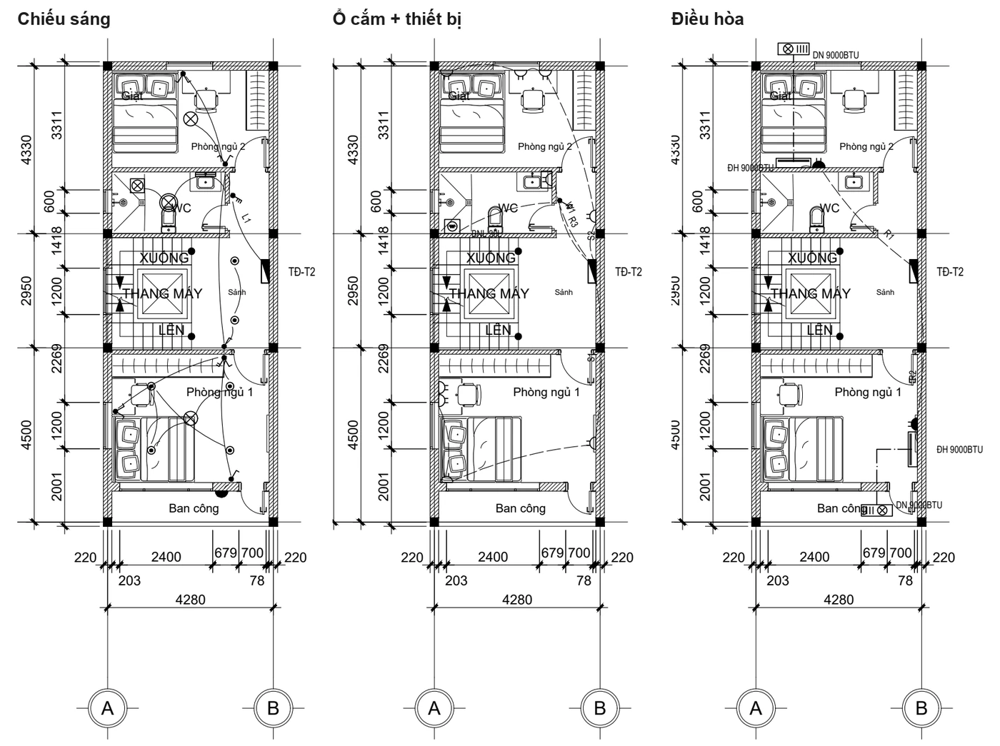
- Đèn theo loại phòng: khách / sinh hoạt / bếp đèn âm trần lưới ~1,5 m (Ø90 / Ø110 chọn trên bảng) + đèn chùm, đèn thả trên bàn ăn; phòng ngủ ốp trần + âm trần; WC ốp trần chống ẩm, đèn gương, quạt hút; ban công đèn tường. Công tắc cạnh cửa phía tay nắm.
- Dàn nóng đặt ban công / sân cùng tầng gần nhất, không có thì giá treo mặt tiền / mặt sau. Tủ bếp chữ I / L của thư viện: chậu rửa + bếp lấy theo hình block.
- Nguồn 1 pha / 3 pha (ô "Nguồn điện": tự động — Ptt > 11 kW thì 3 pha): các lộ chia vào L1 / L2 / L3 cho cân tải; sơ đồ, bảng tải, thuyết minh ghi pha từng lộ, độ lệch tải.
- Bảng làm việc BLVDN: bật / tắt tự thêm điều hòa, bình nóng lạnh, quạt trần, nước nóng; khoảng cách đèn; số điểm / lộ; dung tích bồn mái; tỉ lệ bản vẽ.
- Sơ đồ / bảng dài tự chia vừa khổ A3. Kiến trúc đổi: DNNEN cập nhật mặt bằng nền.
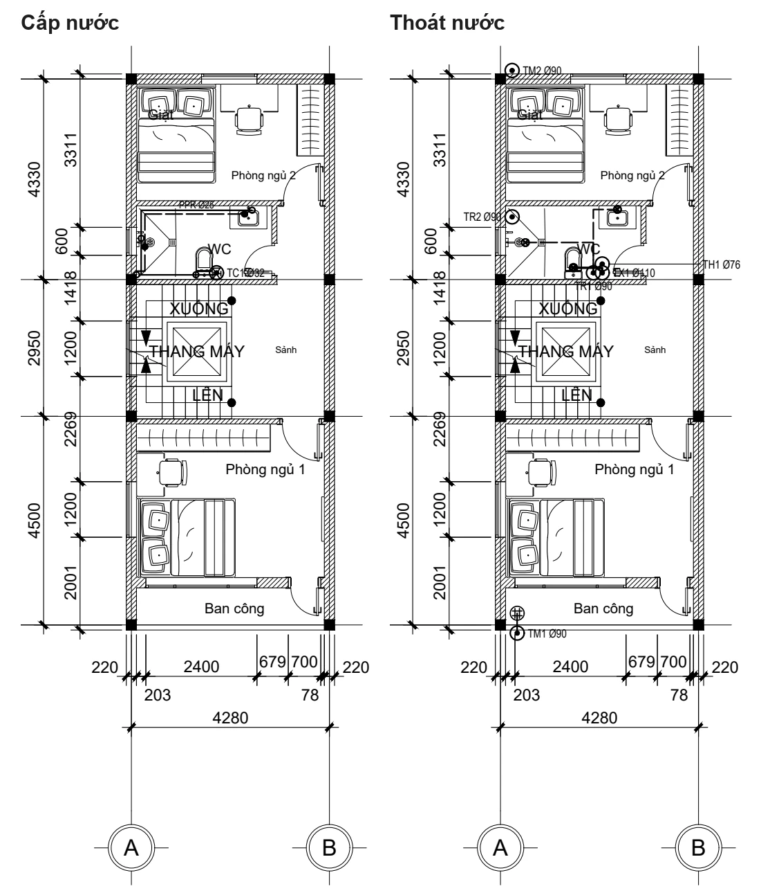
| Lệnh | Việc làm |
|---|---|
| DNTANG | Khai báo tầng kiến trúc — bước 1 khi mặt bằng vẽ tay |
| DNBT · DNDD · DNKH | Bố trí điện tự động · chia lộ + đi dây lại · chèn ký hiệu tay |
| DNCN · DNTN | Cấp nước · thoát nước |
| DNSD · DNSN | Sơ đồ nguyên lý điện + tính tải · sơ đồ cấp thoát nước |
| DNTK · DNCT · DNTM | Thống kê vật tư · chú thích ký hiệu · thuyết minh tính toán |
| DTRDN · DNNEN · BLVDN | Dàn trang · cập nhật mặt bằng nền · bảng làm việc |
Trang DTRDN và tờ Model in bằng INBO tự bật "in độ trong suốt". In tay bằng PLOT thì tích Plot transparency, không thì nền in đậm như dây.
20Trợ lý AI
Khung chat tiếng Việt ngay trong AutoCAD: Claude đọc bản vẽ đang mở, trả lời, soát lỗi, và vẽ bằng chính các lệnh Dtool — tường, cửa thư viện, nhãn phòng, nội thất, DIM, mặt cắt, cả ngôi nhà. Gõ TROLYAI (Kiến Trúc › Chung › Trợ lý AI).
Cần gì để dùng
- Gói Claude (mặc định khi chưa có khóa API): cài Claude Code, mở Terminal / PowerShell gõ
claudevà đăng nhập gói Claude một lần (hoặc khi khung chat báo hết phiên). - hoặc Khóa API: nút ⚙ → dán khóa từ console.anthropic.com (lưu mã hóa theo tài khoản Windows), tính tiền theo lượt dùng.
- Model: Opus 5.5 (mặc định, mạnh nhất) / Sonnet 5.5 (nhanh hơn) / Haiku 5.5 (nhanh, rẻ); mức suy nghĩ thấp / vừa / cao.
Hỏi và làm
- Ví dụ: "bản vẽ này có những lớp nào?", "đếm số cửa đi theo loại", "vẽ phòng 4×5 m tường 220, cửa đi 900 ở tường dưới mở vào trong, cửa sổ 1,4 m tường trên, ghi tên PHÒNG NGỦ rồi bố trí nội thất", "chèn giường rộng nệm 1600".
- Mỗi lần Claude gọi công cụ hiện một dòng (Đang chạy / Xong / Lỗi) — bấm để xem mã và kết quả.
- Vẽ nháp — Giữ / Bỏ: sau mỗi lượt Claude sửa bản vẽ, thanh "Claude vừa sửa bản vẽ: thêm … · sửa … · xóa …" hiện ra, phần mới được tô sáng. Giữ giữ lại; Bỏ lùi toàn bộ lượt đó; Xem chọn + phóng tới. Gõ tin mới = tự Giữ.
- Gửi tệp để đọc rồi vẽ lại: nút Tệp, kéo thả, hoặc dán ảnh (Ctrl+V) — ảnh, PDF, Excel, CSV / TXT, Word, DXF. Ảnh không ghi tỉ lệ: Claude hỏi một kích thước chuẩn trước khi vẽ.
- Khoanh vùng: nút Vùng (AIVUNG) khoanh hai góc → ảnh + danh sách đối tượng trong vùng tự đính kèm; hỏi "sửa chỗ này", "vùng này có lỗi gì?".
Dựng cả ngôi nhà
- Nói công năng"Bố trí nhà lô 5×18, 4 tầng" — hoặc gửi ảnh phác thảo / mặt bằng cũ. Trợ lý hỏi lại công năng từng tầng (để xe, thang máy, số phòng ngủ, WC, thờ, giặt phơi…) trước khi xếp.
- Chọn phương ánMáy Dtool đưa 1–3 phương án theo quy tắc nhà thật (kèm ảnh); trợ lý sửa theo ý anh. Bố trí còn lỗi nặng (bếp ra mặt tiền, WC quá to, phòng ngủ không cửa sổ…) thì không vẽ cho tới khi sửa xong.
- VẽDtool vẽ như MBTDVE: mặt bằng mọi tầng, mặt cắt, mặt đứng, mái; bố trí lưu thành file
.mbtdliên kết với bản vẽ.
Nút làm ngay
- Câu hỏi nhanh (hàng nút dưới khung chat): Soát bản vẽ, Thống kê, Quy chuẩn, Dự toán, Bố trí nhà mới, Quy ước đã nhớ… Sửa danh sách ở ⚙ (mỗi dòng
Tên | câu hỏi). - Soát bản vẽ: DIM ghi số tay khác số đo, cửa chưa gắn tường, nhãn phòng mất biên, tường chưa có thông tin khối lượng, phòng quá nhỏ, chữ đè nhau, vẽ chồng, rác, màu không ByLayer, đối tượng lớp 0, xref mất tệp, công năng chưa thực tế, cầu thang chưa thuận. Bấm từng mục để phóng tới; Sửa các nhóm sửa tự động được (một bước Undo).
- Quy chuẩn (QCVN 01:2021/BXD, nhà ở riêng lẻ): mật độ xây dựng theo diện tích lô, hệ số sử dụng đất, khoảng lùi, ban công vươn ra theo lộ giới. Dự toán sơ bộ: diện tích quy đổi (móng, tầng, sân thượng 50 %, mái…) × đơn giá. Cả hai là tham khảo — địa phương có quy định riêng.
- Nhớ quy ước: "từ nay luôn dùng tường bao 200", "cửa WC rộng 700 cho dự án này" → áp dụng cho mọi lần sau (chung hoặc theo thư mục công trình).
- Nút của anh: "lưu việc vừa rồi thành nút" → nút xanh ▶ tên chạy lại không cần Claude; chuột phải để xóa.
- Khung chat nhớ cuộc chat theo bản vẽ: mở lại bản vẽ (kể cả hôm sau) là nói tiếp. Mới = bắt đầu lại.
- Mỗi lần Claude sửa bản vẽ là một bước Undo (U). Lưu / đóng / xóa tệp / purge → Claude hỏi anh trước. Claude chỉ làm việc trên bản vẽ đang mở, qua cổng nội bộ của máy này.
- Dùng từ Claude Desktop: gõ AINOI →
Bat; Settings › Extensions → kéo thả tệp…\Dtool.bundle\Contents\Ai\dtool.mcpb→ Install.
21Cách tính: neo, nối, lớp bảo vệ
Thép, neo, nối chồng và lớp bảo vệ tính theo TCVN 5574:2018. Thông số chung: móng QLM, dầm QLD, thân QLTH → Thông số chung.
Thép
- Khối lượng = 0,00617 × d² kg/m; số thanh = (cạnh − 2a) / khoảng cách + 1.
- Thanh dài hơn cây thép (mặc định 11 700) được cộng mối nối chồng.
- Đế móng vát: thể tích theo công thức lăng trụ cụt. Móng băng tự trừ phần giao nhau (bê tông, lót, ván khuôn; cốt thép không trừ).
Neo và nối (ô "Neo / nối thép (× d)" = 0, mặc định)
Tự tính theo mục 10.3.5, 10.3.6 từ mác bê tông và loại thép (CB240-T, CB300-V, CB400-V, CB500-V):
- L0,an = Rs·d / (4·η₁·η₂·Rbt) — η₁ = 2,5 thép gân, 1,5 thép trơn; η₂ = 1,0 khi Ø ≤ 32, 0,9 khi Ø 36–40.
- Neo chịu kéo = L0,an; chịu nén = 0,75·L0,an (≥ 15d, 200 mm); neo có bẻ (móc, chữ L) giảm 30 %.
- Nối chồng chịu kéo so le ≤ 50 % số thanh = 1,2·L0,an; nối 100 % tại một tiết diện = 2,0·L0,an; chịu nén = 0,9·L0,an (≥ 20d, 250 mm). Làm tròn lên 10 mm.
| Bê tông + CB400-V | Neo kéo | Neo nén | Nối kéo so le | Nối 100 % | Nối nén |
|---|---|---|---|---|---|
| B20 | 39d | 30d | 47d | 78d | 35d |
| B25 | 33d | 25d | 40d | 67d | 30d |
Nhập số > 0 thì dùng số đó × d cho cả neo và nối. Nối thép cột, vách: So le 2 đợt (mặc định, nửa số thanh nối cao hơn 1,3·Lnối), 100 % một tiết diện, Chỉ chịu nén.
Lớp bảo vệ (Bảng 19)
- Môi trường: trong nhà 20, ẩm > 75 % 25, ngoài trời 30 mm; kết cấu trong đất / móng có lót 40 mm; cọc đúc sẵn 35 mm.
- Mặc định: cổ, sườn móng, giằng, cọc 40; sàn, thang 20; ô văng 30. Hộp quản lý cảnh báo khi lớp bảo vệ hoặc neo nhập tay nhỏ hơn yêu cầu.
- Ghi chú bảng thép ghi đủ neo kéo / nén, nối so le / 100 % / nén theo mác bê tông, loại thép và cách nối cột, vách.
Khối lượng và bố trí thép là tham khảo theo khai báo; kiểm tra lại theo hồ sơ thiết kế trước khi thi công.
22Khi gặp sự cố
| Hiện tượng | Cách xử lý |
|---|---|
| Không thấy tab Kết Cấu / Kiến Trúc / Điện Nước | Gõ RIB. Vẫn không có: kiểm tra dòng lệnh lúc mở AutoCAD có báo "Dtool … đã nạp" không; chưa có thì đóng AutoCAD, chạy lại CaiDat.bat. |
Gõ lệnh Kiến trúc (TUONG, CUA, MBTD…) báo Unknown command | Phần Kiến trúc chưa nạp — dòng lệnh (và từ bản 2.3.88 một hộp báo) nói lý do. Thường gặp nhất: AutoCAD đặt LISPSYS = 0 (AutoLISP kiểu cũ) → gõ LISPSYS, nhập 1, Enter, đóng rồi mở lại AutoCAD. Đang dùng bản cũ hơn 2.3.87 trên máy để SECURELOAD mặc định → cài bản mới nhất. |
| Mất menu Dtool trên thanh menu | Gõ MENUDT. |
| Mất bảng làm việc | Gõ BLV rồi chọn nhóm, hoặc bấm nút ↘ góc nhóm Ribbon. |
| Lệnh báo "cần bản quyền" | Hết hạn dùng thử — xem Bản quyền, gõ BQ. |
| Bộ cài dừng ngay | AutoCAD còn mở (kể cả cửa sổ thu nhỏ) — đóng hết rồi chạy lại. |
| Bấm ESC thấy "Đã hủy lệnh" | Bình thường, không phải lỗi. |
| Cửa không cắt tường / khối lượng tường sai | GCUA gắn cửa vào tường; SKL soát dữ liệu thiếu trước khi KLKT. |
| Block thư viện trong bản vẽ cũ còn hình cũ, viền lộ khi in | CNTV (cập nhật block thư viện) rồi CNMC → Tatca. |
| Mặt cắt / chi tiết không theo mặt bằng mới | CNMC → Tatca; kiểm tra TDMC đang bật. |
| In ra mảng xám / đen sau đồ nội thất | In bằng monochrome.ctb; lớp DTOOL-TOMAU (màu vật liệu) để không in. |
| Nền điện nước in đậm như dây | In bằng INBO, hoặc PLOT có tích Plot transparency. |
| Trợ lý AI báo hết phiên / không trả lời | Mở Terminal gõ claude đăng nhập lại, hoặc nhập khóa API ở ⚙. Nhật ký: %APPDATA%\VeNhanhMong\ai\dtool-ai.log. |
AutoCAD văng hoặc treo
- Xem phiên bảnDòng lệnh lúc mở AutoCAD ghi số phiên bản đang chạy — nên cài bản mới nhất ở dtool.vn.
- Gom nhật kýNhấp đúp
BaoLoi.bat(trong thư mục bộ cài, hoặc%APPDATA%\Autodesk\ApplicationPlugins\Dtool.bundle\Contents\BaoLoi.bat) → fileDtool_BaoLoi_<tên máy>_<ngày giờ>.txttrên Desktop (phiên bản Windows / AutoCAD / Dtool, add-in khác, các lần văng 14 ngày qua). - Khoanh vùngGõ TDMC →
Tat(tắt phần tự vẽ lại mặt cắt / chi tiết) rồi thử lại; tắt rồi vẫn văng thì ghi điều đó khi gửi. - GửiGửi file BaoLoi + mô tả thao tác lúc văng qua Zalo 0937 142 789.
Nhật ký thường của Dtool: %TEMP%\VeNhanhMong.log.
23Bảng tra lệnh
Mọi lệnh Dtool theo tab và nhóm Ribbon. Gõ tên lệnh ở dòng lệnh AutoCAD; trong AutoCAD gõ LENH để xem danh sách này.
Không có lệnh nào khớp.
Tab Kiến Trúc
Chung
| Lệnh | Việc làm |
|---|---|
| CHUAN | Chuẩn hóa |
| BLV | Bảng làm việc của một nhóm Ribbon (thông số + nút lệnh, cạnh màn hình) |
| TROLYAI | Trợ lý AI: khung chat điều khiển AutoCAD / SketchUp bằng tiếng Việt |
| AINOI | Bật / tắt cầu nối AI cho Claude Desktop (MCP) |
| AIVUNG | Khoanh một vùng bản vẽ để hỏi Trợ lý AI (nút Vùng của khung chat) |
| LENH | Danh sách lệnh |
| BQ | Bản quyền |
| CNNET | Cập nhật nét |
| GLAY | Gán layer |
| BYL | Đưa về ByLayer |
Thiết kế
| Lệnh | Việc làm |
|---|---|
| MBTD | Mặt bằng tự động (bảng Thiết kế: lô, số tầng, công năng từng tầng, xem trước phương án) |
| MBTDLO | Chọn khung lô đất + cạnh mặt tiền cho mặt bằng tự động |
| MBTDVE | Vẽ phương án mặt bằng tự động (tường, cửa, thang, nhãn phòng, nội thất) |
| MBTDMC | Mặt cắt thủ công trên bản vẽ MBTD: bấm đường cắt, phía nhìn, điểm đặt |
| MBTDNAP | Nạp lại từ file .mbtd: vẽ lại mặt bằng theo file bố trí đã liên kết (Dtool 3D / app đã sửa) |
Trục - cột
| Lệnh | Việc làm |
|---|---|
| LUOIKT | Lưới trục |
| TRUC | Trục đơn |
| DTRUC | Đầu trục |
| DIMT | DIM trục |
| COT | Vẽ cột |
| COTT | Cột tại giao trục (thông số cột trên bảng) |
Tường
| Lệnh | Việc làm |
|---|---|
| TUONG | Vẽ tường |
| TUONGT | Dựng tường theo trục (thông số tường trên bảng BLV) |
| NTUONG | Nối tường |
| TTCOT | Tường trừ cột |
| HTG | Hatch tường |
| CNHT | Cập nhật hatch |
| SCHEP | Sửa mặt bằng chép |
| KEOTUONG | Co kéo tường (như STRETCH) |
| XTUONG | Xóa tường |
Cửa
| Lệnh | Việc làm |
|---|---|
| CUA | Mở bảng Cửa (chọn mẫu block động, đặt vào tường) |
| CDI | Mở bảng Cửa - cửa đi (block động) |
| CSO | Mở bảng Cửa - cửa sổ (block động) |
| DATCUA | Đặt cửa theo mẫu đang chọn trên bảng Cửa |
| DCUA | Dời / chép cửa |
| GCUA | Gắn cửa vào tường |
| CNCUA | Cập nhật ô cửa |
| NCUA | Nhãn cửa: ẩn / hiện |
| MCUA | Mã cửa |
Phòng - sàn - trần
| Lệnh | Việc làm |
|---|---|
| PHONG | Nhãn phòng |
| CNPH | Cập nhật phòng |
| LSAN | Lát sàn |
| TRAN | Mặt bằng trần |
| DEN | Rải đèn |
| OPLEN | Len / ốp tường |
Mái - mặt đứng
| Lệnh | Việc làm |
|---|---|
| MAI | Mái dốc: mái Nhật / mái Thái / Mansard, 4 mái hông hoặc 2 mái đầu hồi → mặt bằng mái (chọn mái đã vẽ để sửa) |
| MDMB | Mặt đứng / mặt tiền theo mặt bằng: đường nhìn ngoài nhà, hướng nhìn, tên, phong cách hiện đại / tân cổ điển, điểm đặt |
Nội thất
| Lệnh | Việc làm |
|---|---|
| BTPN | Bố trí phòng ngủ |
| BTWC | Bố trí vệ sinh |
| BTBEP | Bố trí bếp |
| BTKHACH | Bố trí phòng khách |
| BTAN | Bố trí phòng ăn |
| CUATV | Thư viện block động (mọi nhóm) |
| DONG | Chép block động |
| CNTV | Cập nhật block thư viện trong bản vẽ (nạp đè bản mới, giữ thông số) |
| DMNT | Danh mục nội thất |
| INTB | Nền TB không in |
| TVNGUON | Xem dấu bản quyền của các block thư viện trong bản vẽ |
Tiện ích
| Lệnh | Việc làm |
|---|---|
| THANG | Cầu thang (theo bảng Tiện ích) |
| MDUNG | Mặt đứng sơ đồ (hộp thông số KT) |
| MCAT | Mặt cắt |
| SCT | Sửa chi tiết đã vẽ |
| CNMC | Cập nhật MC / MĐ / CT |
| TDMC | Tự cập nhật: bật / tắt |
| DSO | Đánh số nhanh |
| TCD | Tổng chiều dài |
| TDT | Tổng diện tích |
Chi tiết
| Lệnh | Việc làm |
|---|---|
| TCT | Trích chi tiết |
| DIMCT | DIM hình chi tiết (tự DIM / sửa số đo) |
| CNCT | Cập nhật chi tiết |
| CTWC | Chi tiết WC |
| CTBP | Chi tiết bể phốt |
| CTBN | Chi tiết bể nước |
| CTBE | Chi tiết thép bể |
Dim - ghi chú
| Lệnh | Việc làm |
|---|---|
| DIMMB | DIM mặt bằng |
| SDIM | Sửa DIM |
| KH | Ký hiệu |
| GCH | Ghi chú |
| STXT | Sửa TEXT |
Khối lượng
| Lệnh | Việc làm |
|---|---|
| KLKT | Khối lượng → Excel (tự liên kết tên bản vẽ, gắn ID, báo dữ liệu thiếu) |
| KLKTCN | Cập nhật Excel đã có |
| TSON | Trát - sơn phòng |
| TNGOAI | Trát - sơn ngoài |
| GCAO | Gán cao / dày |
| GCAOT | Gán cao theo bảng Tường |
| SKL | Soát dữ liệu |
| LKBV | Liên kết bản vẽ (kiểm tra / sửa — KLKT tự liên kết) |
| TIMID | Tìm ID |
| THKL | Bảng tổng hợp KL trong bản vẽ |
Bảng thống kê
| Lệnh | Việc làm |
|---|---|
| BDT | Bảng diện tích |
| BHT | Bảng hoàn thiện |
| BSAN | Bảng lát sàn |
| BCUA | Bảng cửa |
| DEMTB | Đếm thiết bị |
| TKCUA | Bảng cửa (kiểu cũ) |
Hồ sơ
| Lệnh | Việc làm |
|---|---|
| DTRKT | Dàn trang hồ sơ kiến trúc (Layout / Model) |
| KTEN | Khung tên |
| KTRA | Kiểm tra |
| XPDF | Xuất PDF |
Lệnh cũ / ít dùng (chỉ gõ lệnh)
| Lệnh | Việc làm |
|---|---|
| DTOOL | Menu hộp thoại cũ (nay: Ribbon, bảng BLV, menu Dtool, LENH) |
| GDIEN | Giao diện hộp thoại mới / cũ |
| MENUDT | Dựng lại menu Dtool trên thanh menu (bật MENUBAR) |
| ANCUA | Ẩn nhãn cửa chọn (= NCUA An) |
| HCUA | Hiện nhãn cửa chọn (= NCUA Hien) |
| CDICU | Cửa đi vẽ rời kiểu cũ |
| CSOCU | Cửa sổ vẽ rời kiểu cũ |
| KLT | KL tường chi tiết (kiểu cũ — nay KLKT) |
| CNKL | Cập nhật bảng KL tường (kiểu cũ) |
| CSVKL | Xuất CSV KL tường (kiểu cũ) |
| DCKL | Đối chiếu handle bảng KL tường |
| GTRAT | Gán trát theo mặt (kiểu cũ — nay TSON / TNGOAI) |
| DGKL | Diễn giải khối lượng: Excel / CSV / bảng trong bản vẽ (Excel nay dùng KLKT) |
| IDNHAN | Bật / tắt nhãn ID (lớp không in) |
Khác
| Lệnh | Việc làm |
|---|---|
| TDCUA | Tự động cập nhật tường sau khi sửa cửa: Bật / Tắt |
| STRUC | Sửa lưới trục LTC về mẫu |
| THANGCU | Hộp cầu thang kiểu cũ |
Tab Kết Cấu
Móng
| Lệnh | Việc làm |
|---|---|
| QLM | Quản lý móng |
| MBM | Vẽ nhanh mặt bằng |
| LUOI | Lưới trục |
| DM | Đặt móng đơn / cọc |
| MBA | Vẽ móng băng |
| GM | Giằng móng |
| GMB | Giao móng băng |
| CN | Cập nhật ký hiệu |
| CTM | Vẽ chi tiết móng |
| CTMN | Chi tiết nhiều móng |
| TKM | Thống kê thép → CAD |
| TEN | Đổi tên (đối tượng chọn) |
| KLM | Khối lượng → Excel |
Dầm
| Lệnh | Việc làm |
|---|---|
| QLD | Quản lý dầm |
| MBD | Vẽ nhanh mặt bằng dầm |
| LUOI | Lưới trục |
| DD | Đặt dầm |
| GDA | Giao dầm |
| CTD | Vẽ chi tiết dầm |
| CTDN | Chi tiết nhiều dầm |
| TKD | Thống kê thép → CAD |
| TEN | Đổi tên (đối tượng chọn) |
| KLD | Khối lượng → Excel |
Thân
| Lệnh | Việc làm |
|---|---|
| QLTH | Quản lý kết cấu thân |
| QLC | Cột |
| QLV | Vách |
| QLTB | Thang bộ |
| KCTB | Thang bộ từ thang kiến trúc |
| QLLT | Lanh tô |
| QLOV | Ô văng |
| DCOT | Đặt cột lên mặt bằng |
| DVACH | Đặt vách |
| DTB | Đặt thang |
| DLT | Đặt lanh tô |
| DOVA | Đặt ô văng |
| CTTH | Vẽ chi tiết cấu kiện |
| CTNT | Chi tiết nhiều cấu kiện |
| TKTH | Thống kê thép → CAD |
| TEN | Đổi tên (đối tượng chọn) |
| KLTH | Khối lượng → Excel |
Sàn
| Lệnh | Việc làm |
|---|---|
| QLS | Quản lý sàn |
| SANTD | Vẽ sàn tự động |
| DSAN | Đặt ô sàn (2 góc / trục) |
| MBTS | Thép sàn liền mạch theo mặt bằng |
| CTS | Chi tiết sàn |
| TKTH | Thống kê thép → CAD |
| KLTH | Khối lượng → Excel |
Hồ sơ
| Lệnh | Việc làm |
|---|---|
| TANG | Quản lý tầng |
| DTR | Dàn trang hồ sơ |
| INBO | In bộ hồ sơ (Layout / Model) |
| DTRK | Dàn trang shop theo khung (Layout) |
| DTRKM | Dàn trang shop trong Model (nhẹ) |
| RALOI | Rà lỗi hồ sơ |
| CNTANG | Cập nhật khung tầng |
| KLDT | Khối lượng dự toán |
| KLDTN | Khối lượng dự toán nhiều bản vẽ |
| CATTHEP | Bảng cắt thép |
| CATTHEPN | Bảng cắt uốn nhiều bản vẽ |
| IFCKC | Xuất IFC kết cấu có cốt thép (BIM) |
| XEM3D | Xem cốt thép 3D từng cấu kiện |
| MADM | Bảng mã định mức |
| GANID | Gắn ID cấu kiện |
| TIMID | Tìm theo ID |
| DSID | Danh sách ID |
Chung
| Lệnh | Việc làm |
|---|---|
| CHUAN | Chuẩn hóa layer TCVN |
| TRUC | Trục đơn (2 điểm) |
| LUOI | Lưới trục chung |
Dòng lệnh (script)
| Lệnh | Việc làm |
|---|---|
| -QLM | Thêm móng bằng dòng lệnh |
| -QLD | Thêm dầm bằng dòng lệnh |
| -QLTH | Thêm cấu kiện thân bằng dòng lệnh |
| -LUOI | Lưới trục bằng dòng lệnh |
| -MBM | Mặt bằng móng bằng dòng lệnh |
| -MBD | Mặt bằng dầm bằng dòng lệnh |
| -TANG | Khai báo tầng bằng dòng lệnh |
| -RALOI | Rà lỗi hồ sơ bằng dòng lệnh |
| -BQ | Nhập mã bản quyền bằng dòng lệnh |
| -SUACK | Sửa thông số cấu kiện đã có bằng dòng lệnh |
| -TSC | Thông số chung bằng dòng lệnh (cả thông tin khung tên shop) |
| -CHENMODEL | Chèn toàn bộ Model của bản vẽ khác (ghép bộ shop) |
| -XKL | Ghi khối lượng dự toán của bản vẽ vào tệp dữ liệu (gộp bằng KLDTN) |
| -XTHEP | Ghi danh sách thép của bản vẽ vào tệp dữ liệu (gộp bằng CATTHEPN) |
| -IFCKC | Xuất IFC kết cấu có cốt thép bằng dòng lệnh |
Khác
| Lệnh | Việc làm |
|---|---|
| QLBE | Quản lý bể ngầm BTCT |
| DBE | Đặt bể ngầm |
| CTC | Chi tiết cột |
| CTV | Chi tiết vách |
| CTLT | Chi tiết lanh tô |
| CTOV | Chi tiết ô văng |
| CTTB | Chi tiết thang bộ |
| RIB | Hiện lại tab Ribbon |
| MAU | Tạo bản vẽ mẫu |
| NHOM | Hộp nhóm lệnh (CT / KL / BTK / HS) |
Tab Điện Nước
Tầng
| Lệnh | Việc làm |
|---|---|
| DNTANG | Khai báo tầng (vùng mặt bằng kiến trúc từng tầng; MBTD tự khai báo) |
Điện
| Lệnh | Việc làm |
|---|---|
| DNBT | Bố trí điện tự động (đèn, công tắc, ổ cắm, điều hòa, tủ điện) + đi dây |
| DNDD | Chia lộ + đi dây lại sau khi sửa tay |
| DNKH | Chèn ký hiệu điện bằng tay |
| DNSD | Sơ đồ nguyên lý tủ điện + bảng tính phụ tải |
Cấp thoát nước
| Lệnh | Việc làm |
|---|---|
| DNCN | Cấp nước: trục, ống PPR lạnh / nóng, van |
| DNTN | Thoát nước: trục xí / rửa / thông hơi / mưa, ống uPVC, phễu thu |
| DNSN | Sơ đồ nguyên lý cấp nước + thoát nước |
Hồ sơ điện nước
| Lệnh | Việc làm |
|---|---|
| DNTK | Bảng thống kê vật tư điện nước |
| DNCT | Bảng chú thích ký hiệu |
| DNTM | Thuyết minh tính toán điện nước |
| DTRDN | Dàn trang hồ sơ điện nước (Layout / Model) |
| DNNEN | Cập nhật mặt bằng nền theo kiến trúc |
| BLVDN | Bảng làm việc Điện nước (tùy chọn + nút lệnh) |